扉页

版权页
京权图字：01-2002-6591
Originally published by Oxford University Press, Great Clarendon Street, Oxford. © 2000
This edition is licensed for sale in the People's Republic of China only and not for export therefrom.
'Oxford' is a registered trademark of Oxford University Press.
图书在版编目（CIP）数据
劫机！=Skyjack!／（英）维卡里（Vicary，T.）著；秦小雅译．—北京：外语教学与研究出版社，2003.9（2015.1 重印）
（书虫·牛津英汉双语读物）
ISBN 978-7-5600-3702-8
Ⅰ．劫… Ⅱ．①维… ②秦… Ⅲ．小说—对照读物—英、汉 Ⅳ．H319.4：I
中国版本图书馆CIP数据核字（2003）第083870号
出版人： 蔡剑峰
责任编辑：徐 婳
出版发行：外语教学与研究出版社
社 址：北京市西三环北路19号（100089）
网 址：http://www.fltrp.com
版 次：2003年10月第1版
书 号：ISBN 978-7-5600-3702-8
* * *
凡侵权、盗版书籍线索，请联系我社法律事务部
举报电话：（010）88817519
电子邮箱：banquan@fltrp.com
法律顾问：立方律师事务所 刘旭东律师
中咨律师事务所 殷 斌律师
内容简介
内容简介
当有人用枪来得到他们想要的东西的时候，你该如何阻止他们呢？如果他们要什么，你就给什么，他们定会心花怒放——而且，更会得寸进尺，变本加厉。如果你不交出他们想要的东西，那么，就可能会惹恼他们——他们可能会杀了你。很难说到底该怎么办才好。
在这个故事中，面对这个两难境地的是首相，一位政府首脑。但首相也是和我们一样的普通人——有家庭，有孩子。
如果有人拿枪对着你的家人，你怎样才能让头脑保持清醒呢？你该怎么做呢？你采纳别人的建议，跟劫机者展开对话，搞清楚他们到底想要什么，你尽力让大家保持冷静，你慢慢地采取行动。但是，恐怖分子可不愿意等你，迟早你得决定到底该怎么办……
SKYJACK!
SKYJACK!
When people use guns to take what they want, how do you stop them? If you give them what they want, they will be happy—and they will use their guns again, and again. If you don't give them what they want, then they will be angry—and they will kill. It is not easy to decide what to do.
In this story, the person who has to decide is the Prime Minister, the head of the government. But the Prime Minister is also an ordinary person, just like the rest of us—a person with a family and children.
How can you think clearly, if someone is pointing a gun at your family? What do you do? You take advice, you talk to the hijackers, you find out what they want, you keep everybody calm, you try to move slowly. But terrorists don't like waiting, and sooner or later, you have to decide what to do...
目录
chapter-a103_ 1
Chapter 1
The air hostess smiled. 'Welcome aboard, sir. Would you like a newspaper?'
'Yes, please.' Carl took the newspaper and looked at his ticket. 'I'm in seat 5F. Where's that?'
'It's near the front of the plane, sir. On the left, there. By the window.'
'I see. Thank you very much.' Carl smiled back at the air hostess. She was young and pretty. Just like my daughter, he thought.
He put his bag under his seat and sat down. His friend Harald sat beside him. They watched the other passengers coming onto the plane. Harald looked at his watch.
'9.30 p. m.,' he said. 'Good. We're on time.'
Carl agreed. 'And in three hours we'll be home,' he said. 'That's good. We've been away for a long time. You'll be pleased to see your family, won't you, Harald?'
Harald smiled. 'Yes, I will. Have you seen this, sir?' He opened his bag and took out two small planes. 'These are for my sons. I always bring something back for them.'
'How old are your sons?' Carl asked.
'Five and almost seven. The older one has a birthday tomorrow.'
'He'll be very excited tonight then.'
'Yes. I hope he gets some sleep.'
The plane took off. Carl watched the lights of the airport grow smaller below them. Then the plane flew above the clouds and he could see the moon and the stars in the night sky. He lay back in his seat and closed his eyes.
air hostess a woman who looks after the comfort of the passengers of an aircraft during flight. 女空中服务员，空中小姐。
aboard adv. on or into (a ship, train, aircraft, bus, etc.). 在（船、火车、飞机、公共汽车等）上；上（船、火车、飞机、公共汽车等）。
take off (esp. a plane) to rise from the surface of the earth. （尤指飞机）起飞。
第一章
第一章
空中小姐微笑着招呼道：“欢迎乘坐本次航班，先生。请问您想来份报纸吗？”
“好，来一份吧。”卡尔一边接过报纸，一边看着他的票，“我的座位号是5F，请问在哪儿？”
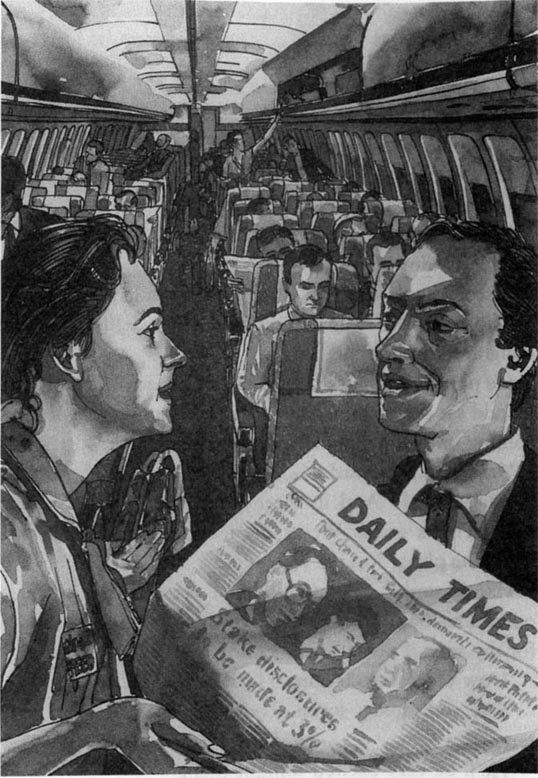
“在飞机的前部，先生。在左边，就在那里，靠近窗户的位置。”
“我知道了，非常感谢。”卡尔也微笑着跟空中小姐说。她又年轻又漂亮。她真像我女儿，卡尔心想。
他把随身携带的包放在座位底下，然后在自己的位子上坐了下来。他的朋友哈拉尔德就坐在他的旁边。他们看着其他的乘客一一登上了飞机。哈拉尔德看了看手表。
“晚上9点半，”他说，“很好。我们会准时起飞的。”
卡尔表示同意。“再过三个小时，我们就到家了，”他说，“这真是太好了。我们已经离家很久了。哈拉尔德，见到家人你会很高兴的，对吧？”
哈拉尔德微笑着。“是的，我会很高兴。先生，你见过这个东西吗？”他打开提包，从里面取出了两架小飞机，“这是给我的儿子买的。我每次都给他们带些小玩意儿回去。”
“你儿子多大了？”卡尔问。
“一个五岁，一个快七岁了。大儿子明天过生日。”
“那他今天晚上一定特别兴奋。”
“肯定的。但愿他能睡会儿觉。”
飞机起飞了。卡尔看着机场的灯在他们的下面越变越小。然后飞机飞到了云层上面，他能看见夜空中的星星和月亮。他靠在座位上，闭上了双眼。
chapter-a103_ 2
Chapter 2
Later, he woke up. Harald was asleep. Carl looked at his watch. It was midnight. He called the air hostess.
'Excuse me. What time do we arrive?'
'11. 30 p. m. local time, sir. That's about half an hour from now.'
'Thank you.' Carl changed the time on his watch.
'Anything else, sir?'
'No, I don't think so. Oh, wait a minute—could I have a cup of coffee, please?'
'Yes, of course, sir.' He watched her bring the coffee. 'She walks like my daughter, too,' he thought. 'And she is very young. She looks nervous, not sure what to do.'
'How long have you been an air hostess?' he asked.
She smiled. 'Three months, sir,' she said.
'Do you like it?'
'Yes, I love it. It's very exciting.' She smiled nervously. 'Will that be all, sir?'
'Yes, thank you.'
'Have a nice flight.'
He drank the coffee and started to read his newspaper. When Harald woke up, Carl showed him a page in the paper.
'Look. There you are,' he said. He pointed to a picture. In the middle of the picture stood Carl himself—a short thin man with grey hair, wearing a suit. Behind him, on the left, was Harald—a tall, strong young man, like a sportsman. Both men were smiling. 'That's you and me, outside the Embassy,' said Carl. 'We're in the news again. You can show it to your sons. You're a famous man, Harald!'
Harald laughed. 'You're the famous man, sir, not me,' he said. 'I'm just a police officer. It's my job to take care of you. That's a photo of you, not me.'
'Perhaps. But your children think that you're a famous man, I'm sure. Here, take it, and show it to them.'
'OK. Thanks.' Harald smiled, and put the newspaper in his coat pocket. 'I think I'll have a cup of coffee too.' He called for the air hostess, but she did not come. Harald looked surprised.
'What's the matter?' Carl asked.
'The air hostess,' Harald said. 'She's sitting down talking to those two men.'
Carl looked up and saw the young air hostess. She was sitting in a seat at the front of the plane with two young men. They looked worried and nervous. Suddenly, one of the young men picked up a bag and walked into the pilot's cabin! The other man and the air hostess followed him.
'That's strange,' said Carl. 'What are they doing?'
'I don't know. It's very strange,' said Harald. 'I don't like it at all.' He began to get out of his seat, but then stopped and sat down again.
For one or two minutes nothing happened. None of the other passengers moved or spoke. They had seen the young men too. It became very quiet in the plane.
A bell rang, and for a moment they could hear two voices arguing. Then the pilot spoke.
'Ladies and gentlemen, this is the Captain speaking. Please do not be afraid. There is a change of plan. We have to land at another airport before we finish our journey. There's no danger. We will land in fifteen minutes. Please stay in your seats and keep calm. Thank you.'
Then the air hostess came out of the cabin. She looked very different now because she had a machine gun in her hand. She stood at the front of the plane and watched the passengers carefully.
wake up 醒，醒来。
asleep adj. sleeping. 睡熟的，睡着的。
pick up take hold of and lift sth. 拿起，捡起。
cabin n. the room at the front of an aircraft in which the pilot sits. 机长室。
argue v. to provide reasons for or against sth., esp. clearly and in proper order. 辩论，争论。
第二章
第二章
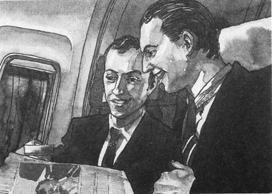
过了一会儿，他醒了。哈拉尔德还在熟睡。卡尔看看手表，正是半夜时分。卡尔招呼空中小姐。
“对不起。请问我们几点到达？”
“当地时间晚上11点半，先生。还有大约半个小时。”
“谢谢。”卡尔把他的手表调成了当地时间。
“还有别的事情吗，先生？”
“没，没有了。哦，等一下——请给我来杯咖啡好吗？”
“没问题，先生。”他看着她把咖啡端过来。“她走路的样子也像我女儿。”他想，“她还很年轻。她看起来有点儿紧张，不知道到底怎么做才好。”
“你当空中小姐多长时间了？”卡尔问她。
她微笑着。“三个月了，先生。”她说。
“你喜欢这个工作吗？”
“是的，我喜欢。这工作非常有意思。”她笑得有些不自然，“还有事情吗，先生？”
“没事儿了，谢谢。”
“祝您旅途愉快。”
他开始边喝咖啡边看报纸。哈拉尔德醒来的时候，卡尔把报纸的其中一个版面指给他看。
“瞧，你在这儿呢，”他说。他手指着一张照片。站在照片中间的那位就是卡尔——一个身材瘦小，头发花白，身穿西服的人。在他身后的左侧站着哈拉尔德——他是个又高又壮的年轻人，就像个运动员。两个人都笑了。“这是我们在大使馆门口照的，”卡尔说，“我们又成新闻对象了。你可以把这张照片给你的儿子看一看。你是名人了，哈拉尔德！”
哈拉尔德笑了。“先生，你是名人，我可不是，”他说，“我只是个警察。我的工作是保护你，这照片是照你的，不是照我的。”
“也许吧。但是，我敢肯定，你的孩子会把你当成名人的。给，拿上这张报纸，回去给他们看看。”
“好吧。谢谢。”哈拉尔德微笑着接过报纸，装在了外衣口袋里，“我想我也需要一杯咖啡。”他招呼空中小姐，但是她没有过来。哈拉尔德的表情很惊讶。
“怎么了？”卡尔问。
“那个空中小姐，”哈拉尔德说，“她坐在那儿跟那两个男的说话。”
卡尔抬起头，看见了那个年轻的空中小姐。她正和两个年轻男子坐在靠近飞机前部的一个座位上。他们看上去都很焦虑、紧张。突然，其中的一个年轻男子拿起一个袋子进了机长室！剩下的那个男人和空中小姐也跟了进去。
“太奇怪了，”卡尔说，“他们在干什么呢？”
“我也不知道，是很奇怪，”哈拉尔德说，“我感到不对劲儿。”他从座位上站了起来，本打算出去，但很快他又坐了下来。
有那么一会儿工夫，什么事情也没有发生。其他乘客也看见了那两个年轻人，但是既没人动一动，也没人说话。飞机上变得非常安静。
传来一声铃响，一时间，人们能听到两个人争论的声音。随后，传来了驾驶员的声音。
“女士们，先生们，我是本次航班的机长。请大家不要害怕，我们要改变飞行计划。在到达目的地之前，我们得在另外一个机场降落。这没有危险。飞机15分钟之后降落。请大家在各自的座位上坐好，保持镇静。谢谢。”
这时候，那个空中小姐从机长室走了出来。不过，此时的她已经有了很大变化，因为她手里拿着一把机枪。她站在飞机的前部，目不转睛地看着飞机上的乘客。
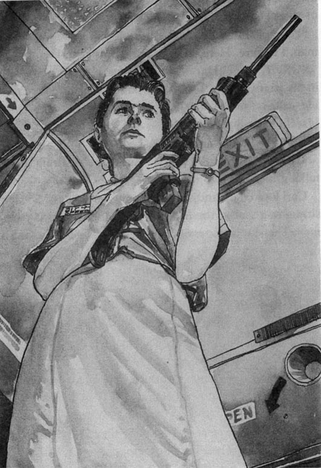
chapter-a103_ 3
Chapter 3
'Here we are, madam.' The big black car stopped and a police officer opened the back door.
'Thank you.' Helen Sandberg smiled at him as she got out. Another police officer opened the front door of her house.
Inside the house it was quiet. Her daughter was reading. She put the book down.
'Hello, Mummy. You're late. You said you'd be home by ten o'clock. I wanted to talk to you about my homework, remember?'
Helen sat down. 'I'm sorry, Sarah. I did remember, really. But I had a very busy day. Anyway, I'm home now. What's the problem?'
'It's this book,' said Sarah. 'I have to write about it at school on Friday, and I don't understand it.'
'All right,' said Helen. 'Bring the book into the kitchen and I'll look at it while you make me a cup of coffee.'
They sat in the kitchen and talked for nearly half an hour. Then Helen looked at her watch. 'OK, Sarah, that's enough for now. It's nearly midnight, and I must be up at six tomorrow. I'm going to bed. Goodnight.'
Alone in her bedroom, she undressed and got into the big empty bed. She was very tired. She closed her eyes and in three minutes she was asleep.
The phone rang at 12.15 a. m.
Helen groaned, and picked it up.
'Hello... What?... Who?... Do you know what time it is?'
She ran her hand through her hair and turned the light on. 'What, now? I don't believe it. Are you sure?'
The voice on the telephone explained carefully. Helen groaned again, and sat up. 'I hope it is serious. If it isn't, somebody is going to be in big trouble... yes... All right... Send the car in fifteen minutes, then. And bring me some coffee! Goodbye.'
She put the phone down and got out of bed. Outside the window she could hear a strong wind blowing.
Twenty minutes later she was sitting in the back of her big black car, drinking a cup of coffee and talking to the Chief of Airport Police on the car telephone. It was raining heavily.
make a cup of coffee 煮咖啡。
groan v. to say in a low voice. 呻吟，低声抱怨。
turn on to cause (water, gas, electricity, etc.) to flow. 打开；接通（水源、煤气、电源等）。
第三章
第三章
“我们到了，夫人。”黑色大轿车停了下来，一个警官打开了车的后门。
“谢谢你。”海伦·桑德伯格一边下车，一边对他微笑着。这时，另一个警官走过去打开了她家的前门。
家里很安静。女儿正在看书。她放下手中的书。
“您好，妈妈。您迟到了，您说您10点之前到家的。我想跟您谈谈我的家庭作业，您还记得吗？”
海伦坐了下来。“对不起，萨拉。我当然记得，真的。但是我今天太忙了。不过，我现在回家了。你有什么问题呢？”
“是关于这本书，”萨拉说，“星期五我得在学校根据它写一篇文章，但是我看不懂。”
“好吧，”海伦说，“把它拿到厨房来，你给我煮一杯咖啡，我来给你看看。”
她们在厨房里坐下，谈了将近半个小时。然后海伦看了看手表。“好了，萨拉，就谈到这儿吧。快半夜了，我明天早晨6点就得起床。我要去睡觉了，晚安。”
她一个人回到卧室，脱下衣服，躺在空荡荡的大床上。她非常疲惫，闭上眼睛不到三分钟就睡着了。
凌晨12:15的时候，电话铃响了。
海伦嘴里嘟囔着，拿起了听筒。
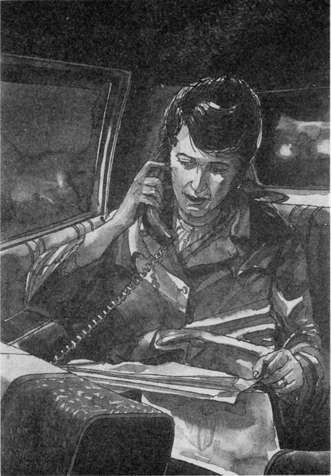
“喂……什么？……谁？……你知道现在几点吗？”
她用手理了理头发，打开了灯。“什么，现在？我不相信。你确定吗？”
电话另一端的人在认真地解释着。海伦又嘟囔了几句，坐了起来。“我希望这的确很严重。否则的话，有人可能会有大麻烦的……是的……好吧……那15分钟之后把车开过来。再给我带点儿咖啡来！再见。”
她放下电话，起了床。窗外，她能听见狂风怒吼。
20分钟之后，她已经坐在了她那辆黑色大轿车的后排座上，一边喝着咖啡，一边用车上的电话和机场警察局的局长通着话。车外大雨倾盆。
chapter-a103_ 4
Chapter 4
Carl looked out of the plane window. It was very dark and rainy. It was a small airport with only one or two other planes. But there were three police cars near the airport building.
'I don't understand,' he said quietly in Harald's ear. 'Why are we here?'
Harald looked worried. 'Don't ask me,' he whispered back. 'Ask them.'
'No thanks.' Carl looked at the hijackers. The young air hostess was still standing at the front of the plane with her machine gun. One of the young men, also with a machine gun, was standing at the back of the plane. The other hijacker was in the Captain's cabin. All the passengers sat very quietly in their seats.
A bell rang and a man's voice spoke.
'Ladies and gentlemen, listen to me. This plane is ours now, and you are our prisoners. We do not want to hurt you, but as you can see, we have our guns and we know how to shoot. So please, sit quietly in your seats and do what we say. We will be here for one or two hours. The Government of this country has two of our brothers in a prison near this airport. We are asking the Government to bring our two brothers to this plane. When our brothers are free, you will be free. We think this will take one or two hours, but not very long. As you know, the Prime Minister of this country is only a woman. She will do what we say. So do not worry. Just sit very still and wait a little while. Goodnight.'
Carl looked at Harald. 'Oh dear,' he whispered. 'I think we're in trouble, my young friend. Big trouble.'
Harald agreed. 'We certainly are. The Government won't set those two men free. They tried to put a bomb on a plane last year, didn't they, sir? They're in prison for thirty years!'
'I know,' Carl whispered. 'No one could set them free. So what about us?'
'What about you, you mean,' whispered Harald. 'I'm not important. Look, sir, you'd better give me your passport.'
'What? Why?'
'Ssh!' Harald put his hand on the older man's arm and stopped talking. Carl looked up and saw the young air hostess staring at them. Her machine gun was pointing at them too. He stopped talking and looked out of the window.
After a few minutes she stopped watching them. 'Give me the passport, sir!' Harald whispered, very quietly. Very slowly and carefully, Carl took it out of his pocket and gave it to him.
There was still some coffee in Carl's cup. Very carefully, Harald put the passport on his tray and poured the coffee onto it. When the passport was very wet, he tore it slowly into little pieces. He was a strong young man and because the passport was wet, it did not make a sound. Then, one by one, he put the pieces of wet paper into his mouth and ate them. In ten minutes, the passport had disappeared.
'I don't understand,' whispered Carl. 'Why did you do that?'
'You'll see,' whispered Harald. 'But when they ask questions, let me answer, sir. OK? You say nothing.'
'OK.' Carl looked away, out of the window. A large black car was just driving up to the airport building.
look out of to see the outside of. 往外看。
still adj. not moving. 静止的，不动的。
set... free 释放。
be in prison 被判入狱。
stare at to look fixedly with wide open eyes, as in wonder, fear, or deep thought. 凝视，盯着看。
tear v. to pull apart or into pieces by force, esp. so as to leave irregular edges. 撕破，撕裂。
第四章
第四章
卡尔透过飞机的窗户向外看。外面很黑，还下着雨。这是一个小型机场，只有另外一两架飞机。但是在机场大楼的旁边，停着三辆警车。
“我不明白，”他附在哈拉尔德的耳边悄悄地说，“我们怎么会在这儿降落呢？”
哈拉尔德一脸焦急。“别问我，”他低声回答，“问他们。”
“不用了，谢谢。”卡尔瞅了瞅那几个劫机犯。那个年轻的空中小姐仍然站在机舱前面，手里拿着机枪。其中一个年轻男人手里也拿着机枪，站在飞机的后部。另一个劫机犯在机长室。机上所有的乘客都静静地坐在座位上。
一阵铃声响过，传来一个男人的声音。
“女士们，先生们，请注意。现在这架飞机已经掌握在我们手里，你们是我们的俘虏。我们不想伤害你们，不过你们也看见了，我们手里有枪，我们也会用枪。所以，请老老实实地坐在你们的座位上，按照我们的要求去做。我们会在这里待上一两个小时。这个国家的政府把我们的两个弟兄关在这个机场附近的一所监狱里。我们现在要求政府把他们送到这架飞机上。一旦我们的两个兄弟自由了，你们也就自由了。我们估计这可能需要一到两个小时的时间，但不会很长。如你们所知，这个国家的首相只不过是个女的，她会听从我们的要求的。所以，你们不用紧张，只需安静地坐着等上一会儿。晚安。”
卡尔看着哈拉尔德。“哦，伙计，”他低声说，“我想我们有麻烦了，年轻的朋友。恐怕是大麻烦。”
哈拉尔德表示同意。“我们显然是有麻烦了。政府是不会释放那两个人的。去年他们企图往一架飞机上放炸弹，对吧，先生？他们被判入狱30年！”
“我知道，”卡尔悄悄回答，“没人会释放他们。那我们该怎么办呢？”
“你的意思是，你该怎么办。”哈拉尔德低声说，“我并不重要。所以，先生，你最好把你的护照给我。”
“什么？为什么？”
“嘘！”哈拉尔德把手放在卡尔的胳膊上，不再说话了。卡尔抬起头，看见那个年轻的空中小姐正盯着他们。她手里的机枪也正对着他们。他不再说话，眼睛看着窗外。
过了一会儿，她不再盯着他们看了。“先生，把你的护照给我！”哈拉尔德悄悄地说，声音很轻。卡尔慢慢地、小心翼翼地从口袋中掏出自己的护照，递给了他。
卡尔的杯子里还剩了一点儿咖啡。哈拉尔德十分小心地把护照放在他的餐盘上，把咖啡倒在上面。等护照湿透了，他慢慢地把它撕成碎片。他年轻强壮，而且护照已经湿透了，所以没有弄出一点儿声响。然后，他把这些湿透的碎纸片一片片地放进嘴里吃掉。仅仅十分钟的时间，那本护照就无影无踪了。
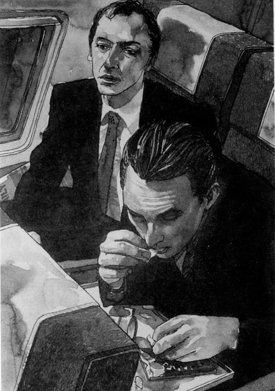
“我不明白，”卡尔低声说，“你为什么要这样做呢？”
“你会明白的，”哈拉尔德低声回答，“不过他们要是问问题的话，让我来回答，先生。好吗？你别说话。”
“好吧。”卡尔隔窗远望。他看见一辆很大的黑色轿车正驶向机场大楼。
chapter-a103_ 5
Chapter 5
The black car stopped outside the airport building and a police officer opened the door. Helen Sandberg got out and went quickly inside. Upstairs, in the control room, the Chief of Airport Police, Inspector Holm, was waiting with a soldier. Helen's secretary, Michael, was there too.
'Good evening, Prime Minister,' said Inspector Holm. 'This is Colonel Carter, of the Special Commando Section.'
'Good evening, Colonel.' Helen shook hands with the soldier and looked at him. He was a thin, tough-looking man, about forty years old, with a brown face. His hand was hard and strong. 'I hope you know your job, 'she thought. 'I may need you.'
She looked out of the window. There was a large plane on the tarmac about two hundred metres away. All its lights were on. 'Is that the plane?' she asked.
'That's it, Prime Minister.'
'Right, give me the facts. How many people are on it?'
Inspector Holm answered. 'One hundred and eight passengers, five crew.'
'What nationalities are they?'
'There are twenty-nine Americans, fifteen British, two Brazilians, two Indians, and one Chinese. The others are from this country.'
'I see. There are a lot of Americans and British, then,' said Helen quietly. 'That means trouble.'
'Yes, Prime Minister,' answered Michael. 'I'm afraid their Ambassadors are on their way here now.'
Helen smiled at him quickly. He was a good secretary; he usually knew what she was thinking. Both the American Ambassador and the British Ambassador were difficult people.
She turned back to Inspector Holm. 'Tell me about the hijackers. What do they want?'
'We don't know how many hijackers there are, Prime Minister. But they have guns, we know that. And they want three things.' Inspector Holm paused and looked down at her. He was a very tall man and he looked very important in his uniform. Helen didn't like him much.
'Yes, well. What three things?' she asked quickly.
'Firstly, they say we must set free their two brothers from prison. You remember, Prime Minister—two men tried to put a bomb on a plane last year. They are in prison near here.'
'I remember,' Helen answered softly. 'They're in prison for thirty years, aren't they?'
'I think so. Something like that.' The man paused. 'Secondly, they say we must refuel the plane because they want to fly to another country. Thirdly, they say we must put this in all our newspapers. It says they are fighting for freedom for their people. They are freedom fighters. They want to liberate their people.'
He gave her a sheet of paper. Helen put it on the table. She did not read it. 'And what about the passengers?' she asked. 'When will the hijackers set them free?'
'They say they will set most of the passengers free when their brothers are on the plane. But they want ten passengers to fly away with them. They will set them free when they arrive.'
'I see.'
'There's one other thing, Prime Minister,' Colonel Carter spoke for the first time. His voice was very quiet, almost gentle. 'They say we must bring the prisoners to the airport in two hours. If not, they will kill a passenger. They said this one hour ago.'
'So we have one hour left?'
'That's right, Prime Minister. Just one hour. Then they will kill the first passenger.'
'I see.' Helen walked slowly to the window and stared out at the plane. It was still raining and a strong wind was blowing. She turned round. 'Thank you, gentlemen. I will have to talk to them. But first I need a few minutes to think. Colonel Carter, Inspector, please go to the other room. Tell the hijackers I will talk to them in five minutes. Michael, stay here.'
'But... yes, madam.' Inspector Holm looked unhappy, but he went out, slowly, with the Colonel. Michael sat quietly, looking at her. He knew what she was thinking.
'Have you got the passenger list, Michael?'
'Yes, Prime Minister. Here you are.'
She picked up the list of names and looked at it carefully. 'Oh my God!' His name was near the beginning. She dropped the list, sat down at the table, and ran her hands through her hair. For a long minute she said nothing. Then she looked up.
'This is going to be very difficult, isn't it, Michael?'
'I'm afraid so, Prime Minister. Very difficult indeed.'
Helen stood up and walked to the window, thinking hard. Outside in the rain, the American Ambassador's car stopped by the door.
commando n. a member of a small fighting force specially trained for making quick attacks into enemy areas. 突击队。
crew n. all the people working on a ship, plane, etc., except the officers. （总称）船上或飞机上的全体工作人员。
on one's way 在路上，在途中。
uniform n. distinctive clothing worn by members of same school or organization. 制服。
refuel v. to re-supply with fuel. 重新补给燃料。
fight for to campaign or strive determinedly for sth. 为……而战。
a sheet of paper a piece of paper. 一张纸。
list n. a set of names of things written one after the other, so as to remember them or keep them in order so that they can be found. 名单；清单。
第五章
第五章
黑色轿车在机场大楼外面停了下来，一个警官打开了车门。海伦·桑德伯格从车上下来，匆匆走进机场大楼。在楼上的机场控制室里，机场警察局局长，巡查官霍尔姆正在等她，一同在等她的还有一个军人。海伦的秘书迈克尔也在场。
“晚上好，首相，”巡查官霍尔姆说，“这位是来自特种突击队的卡特上校。”
“晚上好，上校。”海伦一边和那军人握手，一边上下打量着他。他身材瘦削，古铜色的面庞中透着坚毅，40岁上下的年纪。他的手坚定有力。“我希望你能胜任你的工作，”她想，“我可能会需要你。”
她向窗外望去。一架巨大的飞机停在大约200米开外的飞机跑道上。机上所有的灯都亮着。“就是那架飞机吗？”她问。
“是的，首相。”
“好，给我讲讲详细情况。飞机上有多少人？”
巡查官霍尔姆回答：“108名乘客，五名机组人员。”
“他们都是哪国人？”
“有29个美国人，15个英国人，两个巴西人，两个印度人，还有一个中国人。剩下的都是本国人。”
“我知道了。那么，有很多美国人和英国人，”海伦轻轻说，“这可麻烦了。”
“是的，首相，”迈克尔回答，“恐怕这两国的大使正在往这里赶。”
海伦马上对他笑了笑。他真是个好秘书，总能猜透她的心思。美国大使和英国大使都是难对付的人。
她转过身问巡查官霍尔姆：“跟我谈谈劫机者的情况。他们想要什么？”
“我们还不清楚有几名劫机犯，首相。但我们知道，他们有枪。他们一共要求三件事情。”巡查官霍尔姆停顿了一下，低头看了看她。他个子很高，穿上制服颇有气派。海伦不怎么喜欢他。
“嗯，好。是哪三件事情呢？”她追问。
“第一，他们说我们必须释放他们的两个兄弟。你还记得吗，首相——去年有两个人企图往飞机上装炸弹。他们现在被关在这附近的监狱里。”
“我记得，”海伦轻声答道，“他们被判入狱30年，对吧？”
“我想是的。差不多是这样。”他停顿了一下，“第二，他们说我们必须给飞机补充燃油，因为他们要飞往另外一个国家。第三，他们说我们必须在我们所有的报纸上刊登这些内容，说他们是为了他们人民的自由而战，他们是自由斗士，他们要解放他们的人民。”
他递给她一张纸。海伦把纸放在桌上，她并没有看这张纸。“乘客们怎么样？”她问，“劫机者什么时候释放乘客？”
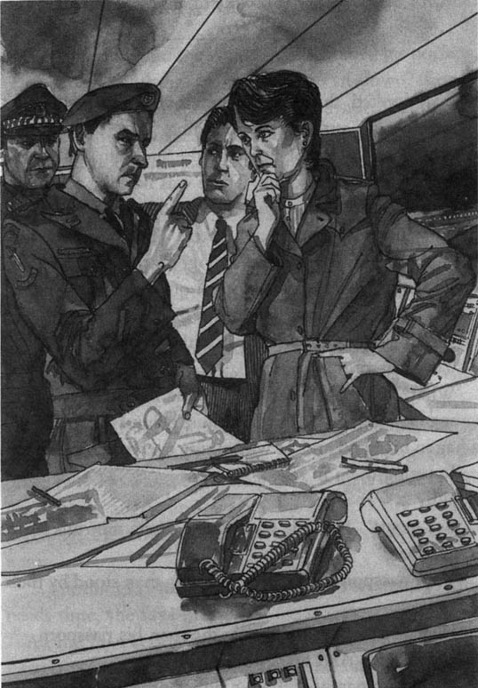
“他们说一旦他们的兄弟上了飞机，他们就释放绝大多数的乘客。但他们还要扣押十名乘客跟他们一起飞走，到达目的地以后再放了他们。”
“我明白了。”
“首相，还有一件事情，”这是卡特上校第一次开口说话。他的声音非常平静，甚至是温柔的，“他们说我们必须在两个小时之内把那些罪犯带到机场。不然的话，他们就会杀掉一名乘客。他们是在一个小时之前说的这话。”
“那么我们只剩一个小时的时间了？”
“是的，首相。只剩一个小时了。然后，他们就会杀掉第一名乘客。”
“我明白了。”海伦慢慢地踱到窗前，盯着窗外的飞机。外面仍然下着雨，狂风呼啸。她转过身。“谢谢你们，先生们。我必须跟他们谈谈。但首先我需要几分钟来整理一下思路。卡特上校，巡查官，请到另一个房间去。告诉劫机犯，我将在五分钟之后跟他们对话。迈克尔，你留下。”
“但是……好吧，夫人。”巡查官霍尔姆看上去有些不乐意，但他还是磨磨蹭蹭地和上校一起出去了。迈克尔静静地坐在那里，看着她。他知道她在想什么。
“迈克尔，你有乘客的名单吗？”
“有，首相。给您。”
她接过名单，仔细看着。“哦天啊！”他的名字非常靠前。她把名单扔到一边，跌坐在桌子旁，用手拢着头发。好一会儿，她一句话也没说。然后她抬起头。
“这下恐怕很麻烦了，对吗，迈克尔？”
“恐怕是这样，首相。确实非常麻烦。”
海伦站起身，来到窗户旁边，苦思冥想。窗外，雨中，美国大使的车停在了门口。
chapter-a103_ 6
Chapter 6
Carl looked through the window and watched the cars arrive at the airport building. There were a lot of cars now and a lot of lights in the building. Inside the plane it was hot and quiet. There was nothing to do. He remembered other times when he had been in a plane at night with his wife and daughter. That had been fun because they were excited and going on holiday. His daughter had always asked lots of questions in the plane. Now no one said anything at all. Carl sat, and thought, and felt his face becoming wet with sweat.
'Your passports, please!'
'What?' He turned suddenly. One of the hijackers, a young man in a black shirt, was just behind them. He had a bag in his hand and he was taking everyone's passports and putting them in it.
'Why...?'
'Be quiet!' Harald whispered. 'Let me talk, sir. Remember?'
'Your passports, please.' The young man stood by their seats.
'Here you are.' Harald gave the man his passport.
'Thank you. And his?'
'He has no passport. I am a police officer and he is my prisoner. I am taking him to prison in my country.'
'I see.' The young man looked at them both in surprise. 'Stand up, you!'
Carl stood up and the young man searched his pockets, but he found nothing. He told Carl to sit down, then he opened Harald's passport and looked inside. 'Police pig!' he said. 'Now you are our prisoner!' Then he hit Harald in the face, looked at Carl, and laughed. 'And perhaps we will set him free!'
Harald said nothing. The hijacker was about the same age as him, but not so big. The young hijacker laughed again and moved on to the next seat.
'Thank you, Harald,' Carl whispered, when the man was at the front of the plane. 'That was very brave. But I won't let you die for me, you know.'
'Be quiet, sir! Something's happening!' Harald whispered back.
Carl looked up. Another hijacker was standing in the door of the Captain's cabin. He was talking to the other two. He was a big strong man, with a black beard. He looked angry and waved his arms. Carl listened carefully. He could hear one or two words, but not many.
'... nothing! Nothing at all!... stupid woman!... she needs time, she says...'
All the hijackers were angry now. They looked at the passports and then started to walk down the aisle, pointing their guns at the passengers. Harald sat very still in his seat.
'Don't look at them, Carl,' he whispered. 'Sit very still and don't look at them.'
Suddenly the big hijacker pulled a passenger out of his seat. The passenger was a short fat man in a grey suit. He shouted angrily in a voice that sounded American, but the hijacker hit him and then pushed him to the front of the plane with his machine gun.
'Turn towards the door!' he shouted. 'Put your hands on the door! Above your head! Higher! That's it!'
The air hostess pointed her gun at the American's back. The hijacker in the black shirt stood at the front of the plane and pointed his gun at the passengers.
'Don't move!' he shouted. 'Stay in your seats and don't look back!' Then the big bearded hijacker went back into the Captain's cabin.
The bell rang. The hijacker's voice spoke.
'Passengers! Listen to me! You know we are here to set our brothers free. I have spoken to the Prime Minister of this country. I told her she must bring our brothers here by two o'clock. That is plenty of time because the prison is only ten kilometres from here. She says she needs more time, but we know she is lying. We have no time. The passenger at the front of the plane is an American spy who lives in our country. All Americans who live in our country are spies. If our brothers are not here at two o'clock, he will die. If you try to help him, you will die too.'
'Jesus,' Carl said quietly. He looked at his watch. The time was 1.50 a. m. He looked out of the window across the rainy tarmac to the airport building. In one of those rooms was the Prime Minister. What would she do? What could she do? 'Come on, honey,' he said softly. 'Start thinking. Think fast, honey. And think hard!'
arrive at to reach destination or end of journey. 到达。
in surprise surprisedly. 吃惊地，惊讶地。
aisle n. passage between rows of pews or seats. 座位中间的过道。
plenty of a great deal of. 许多，大量（只能修饰不可数名词）。
honey n. darling. 爱人，宝贝。
第六章
第六章
卡尔往窗外望去，看见一辆辆汽车开到了机场大楼前。此时，外面已经停了很多车，大楼里灯火通明。机舱内很热，也很安静。什么也做不了。他回忆起了从前，他和妻子、女儿一起在晚上乘坐飞机的情景。那真是一段愉快的时光，他们非常兴奋，因为他们要去度假。他的女儿在飞机上总有问不完的问题。现在，没有一个人吱声。卡尔坐在那里思考着，他觉得自己的脸上淌满了汗水。
“请拿出你的护照！”
“什么？”他猛地回过头。那个穿黑色衬衣的年轻劫机犯正站在他的身后。他手里拿着一个袋子，把所有人的护照都收走，放到袋子里。
“为什么……？”
“别说话！”哈拉尔德低声说，“让我来跟他讲，先生。还记得吗？”
“请交出你们的护照。”年轻人就站在他们的座位旁边。
“给你。”哈拉尔德把他的护照交给了那人。
“谢谢。他的呢？”
“他没有护照。我是一个警官，他是我押解的罪犯，我要把他押回到我们国家服刑。”
“我明白了。”年轻人好奇地打量着他们，“你，站起来！”
卡尔站了起来，年轻人搜查了他的口袋，但没有发现任何东西。他让卡尔坐下，然后打开哈拉尔德的护照来看。“警察猪！”他说，“现在你是我们的囚犯了！”他给了哈拉尔德一个耳光，眼睛望着卡尔大笑着，“也许我们会把他放了！”
哈拉尔德没有吭声。这名劫机犯和他的年龄差不多，只不过不像他那么魁梧。年轻的劫机犯又狂笑了一通，然后走到了下一个座位跟前。
“谢谢你，哈拉尔德，”卡尔低声说，此时劫机犯走到了飞机的前面，“你太勇敢了。但是，你要明白，我不会让你为我牺牲的。”
“别说话了，先生！有情况！”哈拉尔德低声说道。
卡尔抬起头。另一个劫机犯正站在机长室门口，他在和两个同伙说话。他长得又高又壮，留着黑色的小胡子。他挥舞着胳膊，看起来很生气。卡尔竖起耳朵全神贯注地听着。他能听见一两个字，但是不多。
“……什么都没有！一点儿也没有！……愚蠢的女人！……她需要时间，她说……”
现在所有的劫机犯都有些气急败坏。他们把护照拿起来看了看，然后走到过道中间，拿枪对着乘客。哈拉尔德静静地坐在座位上。
“别盯着他们看，卡尔，”他低声说，“安静地坐着，别看他们。”
突然，那个大个子劫机犯把一个乘客从座位上拽了起来。这是一个矮胖的男人，穿着灰色套装。他愤怒地大喊大叫，听口音像是个美国人，但劫机犯打了他，然后用机枪顶着他来到机舱前面。
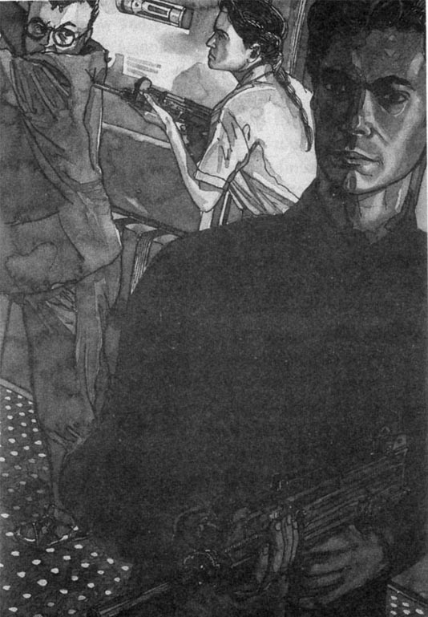
“脸朝着门！”他吼道，“把手放到门上！举过头顶！再高点儿！行了！”
那个空中小姐拿她的枪顶着美国人的后背。穿黑衬衣的劫机犯站在机舱前面，手里的枪对着所有的乘客。
“不许动！”他大喊，“坐在你们的座位上，不许向后看！”然后，那个留着胡子的大个子劫机犯转身进了机长室。
铃声响了，传来了劫机犯的声音。
“各位乘客请注意！你们知道，我们到这里来是为了解救我们的兄弟。我已经跟这个国家的首相通过话了，我告诉她，两点钟之前，她必须把我们的弟兄送过来。这个时间足够了，因为监狱离这里只有十公里。她却说她需要更多一点儿的时间，但我们知道她这是在撒谎。我们没有时间了。现在站在机舱前面的这个乘客是一个居住在我们国家的美国间谍。所有住在我们国家的美国人都是间谍。如果两点钟的时候我们的两个弟兄还没有被送到飞机上，他就得死。如果你们企图帮他，你们也会死。”
“主啊。”卡尔低声叫道。他看了一眼自己的手表，已经是凌晨1:50了。放眼窗外，他的目光穿过雨中的飞机跑道，看到了机场大楼。首相就在其中的一个房间里。她会做些什么？她能做些什么呢？“快点儿，宝贝，”他轻声说，“想想办法吧。快点儿想个办法吧，宝贝。好好想想吧！”
chapter-a103_ 7
Chapter 7
Helen Sandberg sat at the radio in the control room. Michael, Inspector Holm, and Colonel Carter sat behind her. They could all see the plane, two hundred metres away, and they could all hear the voice of the hijacker on the radio. It was loud, excited.
'Our brothers have done nothing wrong. They are innocent! They are fighters for the freedom of our people! We need them with us on this plane, now!'
Helen kept her voice low and calm. 'Look, I understand what you say. But those men are criminals; they're in prison. I can't bring them here. And remember, the passengers on the plane are innocent people too, with families and children. Please set them free. We will not hurt you. We...'
The voice on the radio interrupted her. 'Mrs Sandberg! I do not want to talk any more. It is now 1.59 a.m. Do you have our brothers here, at the airport?'
'No. I told you...'
'Then watch the front door of the plane. You can see it well, I hope?'
'Yes.' Helen's voice was quiet now, almost a whisper.
'Then watch. There is an American spy behind it. And remember, we have many American spies, and many important business people on this plane. In half an hour I will ask you again about my brothers.'
Helen stared out at the plane. Its front door was very small and far away. Colonel Carter touched her arm.
'Here are some binoculars, Prime Minister. You will be able to see more clearly with these.'
She did not want to look, but she had to. She had decided not to free the prisoners, so now she had to see what happened to the passengers. She picked up the binoculars and stared at the front door of the plane.
The door opened slowly. There were no steps outside the door, so it was about four metres above the ground. Standing in the door was a short fat man, his hands above his head. His face was white and he looked very frightened. Then he jumped. But as he jumped, a girl came to the door and shot him. Some bullets hit him in the air and more bullets hit him as he lay on the ground. One of his arms moved a little and blood ran out of the side of his head onto the wet tarmac. The girl continued shooting him for ten, maybe fifteen seconds. Then someone pulled her back into the plane and the door closed.
For a long time everyone was silent. Then Colonel Carter spoke. 'Inspector, why didn't your men shoot? That girl was in the doorway for nearly fifteen seconds! Why isn't she dead?'
'We... are police officers, not soldiers. I...' But the Colonel interrupted him.
'Prime Minister, let my men deal with this problem. They have, killed a man now and they'll kill another one in half an hour. We must attack that plane! We are commandos; we know how to do it!'
Helen was still watching the dead body of the man on the tarmac. She thought a hand moved, for a moment; but no, he must be dead by now. There was a pool of blood on the tarmac now, around his head. He could not possibly be alive. For a moment she did not hear the voices around her. In half an hour...
'Prime Minister... ?'
'Yes.' She turned towards them. 'Yes. Colonel Carter, bring your men here, immediately. Meet me in ten minutes with your plan. But I warn you, it must be a good one. I don't want any more dead passengers.'
'Yes, Prime Minister. At once.' The Colonel turned to go.
'Inspector.'
'Yes, madam.'
'I want those two prisoners brought here from the prison. At once. You have twenty-five minutes, no more. Do you understand?'
'But Prime Minister! You can't do that!' The Inspector and the Colonel stared at her in surprise.
'I can and I will.'
'But these men are dangerous criminals—terrorists! They tried to put a bomb on a plane! They are in prison for...'
'For thirty years, Colonel. I know. But they are only two men, and there are over a hundred innocent people on that plane. My job is to save their lives, and I need time to do it.'
The Inspector stood up very tall and straight in his fine uniform. 'Prime Minister, I strongly advise you not to do this. You don't understand...'
Helen interrupted him, her voice ice-cold and angry. 'I understand very well indeed, Inspector. And I thank you for your advice. But I think I must make the decisions, and you must obey my orders. You now have only twenty-four minutes. Bring those prisoners here, please.'
'Yes, madam.' The Inspector and the Colonel left the room, looking very unhappy.
'Prime Minister?'
'Yes, Michael?' She turned, and saw that Michael was smiling quietly.
'The American and British Ambassadors are here. Do you want to see them?'
She groaned, and sat down suddenly. 'Do I want to? Of course I don't! But I suppose I must talk to them because that man was an American. Send them in. They can have five minutes with me, that's all.'
'Yes, Prime Minister.' Michael picked up a telephone.
innocent adj. (of people) guiltless. 无辜的，无罪的。
criminal n. a person who is guilty of crime. 犯罪者，罪犯。
binoculars n. a pair of glasses like short telescopes for both eyes, used for looking at distant objects. 双筒望远镜。
interrupt v. to break the flow of speech of someone by saying sth. 打岔，插嘴。
deal with handle, cope with. 处理，应对。
attack v. to bring violence on, esp. with weapons. 进攻。
dangerous adj. able to or likely to cause danger. 危险的。
make a decision to decide. 做出决定。
obey v. to do what one is asked or ordered to do by someone. 遵守。
第七章
第七章
海伦·桑德伯格坐在控制室的无线电前。她的身后坐着迈克尔、巡查官霍尔姆和卡特上校。他们都能看到那架飞机，距此只有200米的距离。他们甚至都能听见无线电中劫机犯讲话的声音，那声音很大、很亢奋。
“我们的弟兄没有做错任何事情。他们是无辜的！他们是为我们人民的自由而战的斗士！现在，必须把他们送到我们这架飞机上！”
海伦尽力让自己的声音保持低沉和冷静。“你瞧，我明白你的意思。但是，那两个人是罪犯；他们被关在监狱里，我不能把他们带到这里来。而且请你记住，飞机上的乘客也是无辜的，他们也有家庭、有孩子。请放了他们。我们不会伤害你们的，我们……”
无线电里传出的声音打断了她。“桑德伯格夫人！我不想再跟你谈了。现在是凌晨1:59分。你把我们的两个弟兄带过来了吗，带到机场了吗？”
“没有。我告诉你……”
“好吧，看飞机的前门。但愿你能看得清？”
“看得清。”海伦的声音非常微弱，几乎是喃喃而语。
“那你看着。门后现在站着一个美国间谍。记住，我们手里有很多美国间谍，飞机上还有很多举足轻重的商人。半个小时之后，我会再问你一遍，我的弟兄怎么样了。”
海伦盯着窗外的飞机。它的前门很小，距离又很远。卡特上校碰了碰她的胳膊。
“这儿有一副双筒望远镜，首相。用它你能看得更清楚些。”
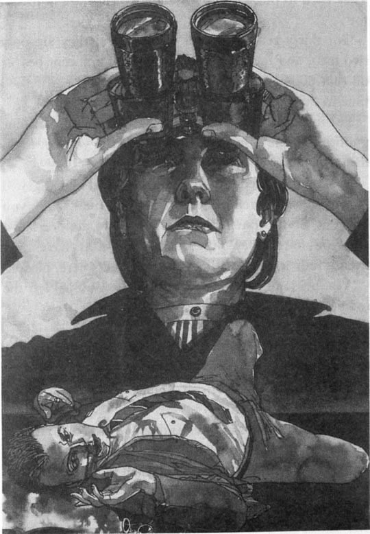
她不想看，但是她不能不看。她已经打定主意不释放那些罪犯，所以她现在需要搞清楚乘客那边的情况。她拿起望远镜，往飞机的前门那里望去。
门缓缓地打开了。因为没有舷梯，所以飞机的门离地面大约有四米高。门口站着一个身材矮胖的男人，他的手举过头顶。他脸色苍白，看上去吓得魂不附体。然后，他纵身跳了下来。可是就在他跳下来的瞬间，一个姑娘冲到门口，开枪向他射击。有几枪在空中击中了他，但是更多的子弹是他坠落到地上之后击中他的。他的一只胳膊微微动了动，鲜血从他贴着湿漉漉的飞机跑道那一侧的头颅中喷涌而出。那个姑娘又持续向他射击了十秒钟，也许是15秒钟。然后，有人把她拽回了飞机，机门又被关上了。
好一会儿，没有一个人吱声。终于卡特上校张口说话了：“巡查官，你的人为什么不开枪？那个姑娘站在机舱门口有将近15秒钟之久！为什么没有把她打死？”
“我们……是警察，不是士兵。我……”但是，卡特上校打断了他。
“首相，让我的人来应对这个场面吧。他们已经杀了一个人了，半个小时之后，他们会再杀死一个的。我们必须向飞机发动强攻！我们是特种兵；我们知道该怎么办！”
海伦仍然盯着跑道上的那具男尸看。有一瞬间，她曾以为死者的一只手动了动；但不是，他现在肯定已经死了。在飞机跑道上，在他的头部周围，现在有一大滩鲜血。他不可能活着。有那么一会儿，她甚至听不见周围的声音。半个小时之后……
“首相……？”
“嗯。”她转过身面对着他们，“好吧。卡特上校，马上把你的人带到这儿来。十分钟之后带着你的行动计划来见我。不过我警告你，你的计划必须可行。我不想再看到更多的乘客死掉了。”
“是的，首相。马上照办。”上校转身要走。
“巡查官。”
“在，夫人。”
“我要把那两个罪犯从监狱带过来。立刻带过来。给你25分钟的时间，一分钟都不能延误。你明白吗？”
“但是首相！你不能这样做！”巡查官和上校都不解地盯着她。
“我能而且我就要这样做。”
“但他们是危险的罪犯——是恐怖分子！他们曾试图往飞机上装炸弹！他们被判入狱……”
“入狱30年，上校。我知道。但他们毕竟只有两个人，而飞机上有100多名无辜的乘客。我的任务就是要拯救他们的生命，我这么做需要时间。”
身穿得体的制服，巡查官站起来后显得高大挺拔。“首相，我坚决建议您不要这么做。您不明白……”
海伦打断了他的话，冰冷的声音中透着恼怒。“事实上我非常明白，巡查官。谢谢你的劝告。但是我认为我必须做出决定，而你们必须服从我的命令。现在你只剩下24分钟了。请把那些罪犯带到这里来。”
“遵命，夫人。”巡查官和上校一起离开了房间，看上去很不高兴。
“首相？”
“什么事，迈克尔？”她转过身，看见迈克尔正默默地微笑着。
“英美两国大使都在这儿。您想见他们吗？”
她嘟囔了一声，突然坐了下来。“我想吗？我当然不想！不过我认为我应该跟他们谈一谈，因为死的那个人是美国人。让他们进来吧，我可以给他们五分钟时间，就这样吧。”
“好吧，首相。”迈克尔抓起了电话。
chapter-a103_ 8
Chapter 8
When the girl came back into the cabin she was shaking. Her hands were shaking and she was crying and smoke was coming out of her gun. One of the passengers, an American, stood up and shouted at her.
'You're a murderer!' he shouted. 'You're a dirty, murdering b...'
She turned and pointed the gun at him and fired. The man sat down in his seat and the bullets went above the seats, all along the plane, and out through the roof. After ten seconds the girl stopped firing and shouted.
'You shut up! You shut up and sit down or I'll kill you all! All of you!' But she was crying too, and the young man in the black shirt put his arm around her and held her. She leaned against him, crying, and he whispered something in her ear.
It was then that Harald moved. He got out of his seat, bent low, and ran very fast along the aisle towards the front of the plane. The young man and the girl did not see him coming and he caught them both around their legs and knocked them onto the floor. Harald fell on top of them and he tried to take one of the guns, but the girl pulled his hair and the young man held his arms. Then the bearded man came out of the Captain's cabin and hit Harald hard on the head with his gun. Harald fell on the floor and lay still. The bearded man pointed his gun at the passengers and shouted 'SIT STILL!' very loud indeed.
None of the passengers had moved except Carl, and he was too slow. He stood very still in the middle of the aisle five metres away from the bearded man's gun. The other two hijackers were still on the floor, and Carl saw the Captain move in the cabin behind the bearded man. But the young man in the black shirt saw him too, and stood up and pointed his gun at the Captain. Both Carl and the Captain were too late.
'I am getting old,' Carl thought. 'When I was young, I could move as fast as Harald. But not now.' Carl sat down in his seat, very slowly. The bearded man watched him all the time. He pushed Harald with his foot.
'Search him,' he said to the girl. 'Then handcuff him to the door. He will be the next one.'
The girl pulled Harald to the door. She found some handcuffs in his pocket and handcuffed him to the door. Then she searched his other pockets.
In one of his pockets she found a newspaper. She looked at it and saw the photo of Harald and Carl. She stood up slowly and showed it to the bearded man. He looked at the photo, and then he looked at Carl carefully and for a long time. Very slowly smiles appeared on the faces of the two hijackers and they began to laugh.
murderer n. a person who kills the other(s) unlawfully, esp. on purpose. 谋杀者。
roof n. the outside covering on top of a building. 屋顶，顶。
lean against to support or rest oneself in a bent or sloping position. 斜倚，斜靠。
第八章
第八章
那个姑娘回到机舱时，浑身颤栗。她双手发抖，而且哭了起来，她的枪口还在冒着烟。一个美国乘客站起来对她大吼。
“你是个杀人犯！”他喊道，“你是个肮脏的杀人……”
她转过身，对着他就是一枪。那名男子跌坐在座位上，子弹从座位上方飞过，穿过整个机舱之后，从飞机顶部穿了出去。十秒钟之后，姑娘停止了射击，开始喊叫。
“统统闭上嘴！闭上嘴老老实实地坐着，否则我就把你们统统杀掉！全部杀掉！”但她又哭了起来。穿黑色衬衣的年轻男子用胳膊揽住了她。她靠在他身上，放声大哭，他在她耳边低声地说了些什么。
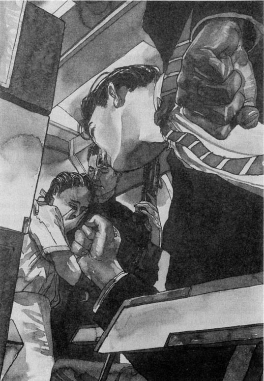
就在那个时候，哈拉尔德开始行动了。他离开了座位，弯着腰，沿着过道快速地冲到机舱前面。年轻人和那个姑娘都没有看见他过来，他抓住了他们的腿，把他们摔倒在地。哈拉尔德压在他们的身上，想从他们手里夺过一枝枪，但是那个姑娘拽着他的头发，年轻男子抓住了他的胳膊。正在这时，那个留着小胡子的人从机长室出来，用手里的枪朝哈拉尔德的头部狠狠地打了一下。哈拉尔德顿时倒在地上，一动不动了。小胡子用手里的枪指着乘客吼道：“都坐着不许动！”吼声如雷。
机上所有的乘客都老老实实实地不动了，只有卡尔例外，不过他的动作太慢了。他一动不动地站在过道中间，离小胡子手里的枪大约有五米远。另外两名劫机犯还倒在地上没有起来，卡尔看见机长跟在小胡子的身后进了机长室。可是那个穿黑衬衫的年轻人也看到了机长，他一跃而起，拿枪顶着机长。卡尔和机长的反应都太迟缓了。
“我老了，”卡尔心想，“年轻的时候，我和哈拉尔德一样麻利。但现在不行了。”卡尔慢慢地坐回到自己的座位上，小胡子一直在盯着他。小胡子用脚踢了踢哈拉尔德。
“搜搜他的身，”他对那个姑娘说，“然后把他铐到门上。下一个就是他。”
那个姑娘把哈拉尔德拖到门口。她在哈拉尔德的口袋里找到了一副手铐，把他铐在了门上。接着，她又搜查了哈拉尔德的其他口袋。
在其中一个口袋里，她发现了一张报纸。她打开一瞧，看到了上面哈拉尔德和卡尔的照片。她慢慢地站起身来，把报纸拿给小胡子看。他看了看照片，又端详了卡尔好一会儿。两个劫机者的脸上渐渐地露出了一丝笑容，然后他们开始纵声大笑。
chapter-a103_ 9
Chapter 9
Helen Sandberg stood up to welcome the American and British Ambassadors. The two men were very different. The American Ambassador was a short round man with a loud voice which Helen disliked very much. He often wore open-necked shirts, and he had a very hairy chest. She disliked that too. The British Ambassador — a tall thin Scotsman from Edinburgh — was always quiet, polite and well-dressed, but she did not always believe what he said. Once — a year ago — he had lied to her and she could never forget that.
But most of all, she disliked them because they were both military men and their countries were much bigger than hers. They wanted military bases for their soldiers in her country and she did not want them.
'So, gentlemen, what can I do for you?'
The American spoke first. 'Well, ma'am, an American passenger is dead...'
'Yes, I know. I am very sorry about that. I hope no more will die.'
'I hope so too, ma'am. There are twenty-eight US passengers on that plane and my Government wants to keep them alive.'
'There are a hundred and seven passengers on that plane, Ambassador, and my Government wants them all alive,' Helen answered quietly. But the Ambassador did not listen.
'So the US Government is going to help you, ma'am. We have fifty US Marines at the US Embassy, and they can be here in one hour from now. Then they'll just take that goddam plane apart.'
The Scotsman smiled. 'Excuse me, Ambassador, but perhaps one hour from now will be too late. One man is already dead. But, er... perhaps you don't know this, Prime Minister, but this week six SAS soldiers are visiting the British Embassy, and they're waiting outside in my car now. These men know a lot about hijacks; much more than the US Marines or, probably, your own soldiers, Prime Minister. They know exactly what to do. So...'
'Now just a moment!' The American interrupted. 'The US Marines are...'
'Gentlemen!' Helen's clear, hard voice stopped them. 'There's no time to argue. Firstly, I didn't know about the SAS soldiers in the British Embassy, and I am very surprised about it. Very surprised indeed, Ambassador. Secondly, I do not think it is a good idea to attack a plane with a hundred and seven passengers in it, and "take it apart" as you say. I want these people to live, not die. So I thank you for your ideas, but remember that this small country is ours, not yours. We will manage this problem in our own way, with our own people, thank you very much. Now you must excuse me, I am busy.'
At the door, the Scotsman turned back. 'Prime Minister, I know you want to save lives,' he said. 'I understand that. But these hijackers must not go free. My Government does not want that. No Government in the world wants that.'
'I know that, Ambassador,' Helen answered quietly. 'I know that very well.'
As they went out, the phone rang. Michael picked it up. Helen sat down at the table and watched him. His face was very serious. He wrote on a piece of paper and then put the phone down. For a moment, he did not look at her.
'What is it, Michael? Tell me.'
'It was a radio message from the plane, Prime Minister.'
'Well? What did they say? Didn't they want to talk to me?'
'No, Prime Minister. Just the message. It says: "We love our brothers. We hope the Prime Minister loves her husband. He is on the plane, just behind the door."'
For a long moment she stared at Michael, but she did not speak. A picture of the American passenger appeared in her head. She saw him jumping out of the door and the girl shooting him. Shooting him for ten, maybe fifteen long seconds.
'I'm sorry, Prime Minister,' said Michael softly.
'What? Yes, so am I. I thought perhaps... perhaps the hijackers didn't know Carl was my husband. But now they do know.'
She ran her hand through her hair and then looked at her watch. But her hand was shaking so much that she could not tell the time.
The phone rang again. Michael picked it up.
'Colonel Carter is outside, Prime Minister.' He watched her, waiting for an answer. 'I'll tell him to wait, shall I?'
She put her hands flat on the table and stood up. 'Yes. Yes, Michael. Tell him to wait two minutes, that's all.' She walked to the window and stared out at the plane. She pressed her forehead against the cool glass and for two minutes she did not move. Then she turned round and smiled at Michael.
'Let's just hope Colonel Carter's plan is a good one, shall we? Show him in.'
lie v. to have a false appearance. 撒谎。
military adj. of or connected with soldiers, armies, or war fought by armies. 军事的，军队的。
base n. a centre from which a start is made in an activity, often one where supplies are kept and plans are made. 基地。
Marine n. sometimes Marine Corps, a small army-like force connected to the navy. （美国）海军陆战队。
embassy n. the official building where an ambassador and those who work with him live in a foreign country. 大使馆。
take... apart to separate a small machine, clock, etc. into pieces. 分解，拆开。
message n. a spoken or written piece of information passed, from one person to another. 口信，消息。
flat adj. smooth and level. 平坦的，平直的。
press v. to push firmly and steadily against sth. 压。
forehead n. the part of the face above the eyes and below the hair. 前额，额。
第九章
第九章
海伦·桑德伯格起身欢迎英美两国大使。这是两个截然不同的人。美国大使身材矮胖，嗓门很大，这一点让海伦很不喜欢。他总爱穿开领的衬衫，而且他长着毛茸茸的胸毛，这一点她也不喜欢。英国大使——一个高高瘦瘦的苏格兰人，来自爱丁堡——总是非常安静，有礼貌，穿着考究，但是她不相信他说的话。有一次——在一年前——他曾经跟她撒过谎，那件事她永远也不会忘记。
但最重要的是，她不喜欢他们是因为他们都是行伍出身，而且他们的国家又都比她的祖国大很多。他们想在她的祖国建立军事基地，但是她不同意。
“好吧，先生们，我能为你们做些什么？”
美国大使首先开口讲话：“嗯，夫人，有一名美国乘客死了……”
“是的，我知道。我对此非常遗憾。我希望不会再有人死去。”
“我也希望如此，夫人。那架飞机上共有28名美国乘客，我国政府希望保证他们的生命安全。”
“大使，那架飞机上共有107名乘客，我国政府希望保证他们所有人的生命安全。”海伦平静地回答。但是美国大使并没有理会她的话。
“所以美国政府打算向您提供援助，夫人。现在我们的大使馆里有50名海军陆战队队员，一个小时之内他们就能赶到这里。他们能把那架混蛋飞机大卸八块。”
那个苏格兰人笑了。“请原谅，大使，可也许一个小时就太晚了。已经死了一个人了。不过，呃……也许您不知道，首相，这周，有六名英国特种航空队的士兵来访问英国使馆，他们现在就在外面我的车里等着。他们有丰富的对付劫机的经验；比美国海军陆战队队员或者，兴许比贵国战士的经验还要丰富，首相。他们非常清楚该怎么处理这种情况。所以……”
“等等！”美国大使插话道，“美国海军陆战队是……”
“先生们！”海伦清晰果断的声音打断了他们的争论，“我们没有时间来争论了。首先，我不知道在英国大使馆里有英国特种航空队士兵，对此我感到非常吃惊。大使先生，确实是非常吃惊。其次，飞机上有107名乘客，我不认为强攻是个好主意，或者像你说的那样，‘将其大卸八块’。我要让这些人活着，而不是死去。所以我感谢你们的意见，但请记住，这个小国是我们的，而不是你们的。我们将以自己的人力，按照自己的方式来解决这个问题，十分感谢。现在，请原谅，我很忙。”
走到门口，那苏格兰人又转过身。“首相，我知道您想保护这些乘客的生命安全，”他说，“对此，我理解。但是，不能放走这些劫机犯。我国政府不希望放走他们，世界上任何一个政府都不希望这样。”
“我明白，大使，”海伦平静地回答，“我非常清楚这一点。'
就在他们出去的时候，电话响了。迈克尔抓起话筒，海伦坐在桌边注视着他。他的脸色非常严肃，在一张纸上记了些什么，然后放下了听筒。有那么一会儿，他没有看她。
“怎么了，迈克尔？告诉我。”
“是飞机上发来的一个无线电信息，首相。”
“怎么了？他们说什么？他们不想和我对话吗？”
“是的，首相。只有一个口信，他们说：‘我们爱我们的弟兄。我们希望首相也爱她的丈夫。他在飞机上，就在门后。’”
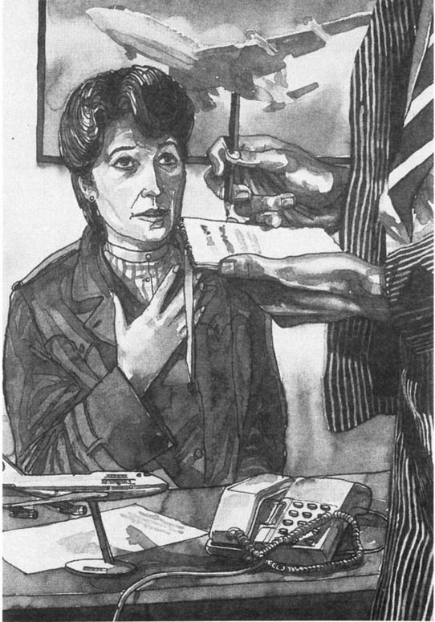
好长一段时间，她愣愣地看着迈克尔，一言不发。发生在那个美国乘客身上的一幕在她的脑海中浮现出来。她目睹了他从门口跳出，那个姑娘对他开枪射击的情景，时间长达十秒钟，甚至有15秒钟。
“我感到很遗憾，首相。”迈克尔轻轻地说。
“什么？是的，我也很遗憾。我原以为也许……也许劫机犯不知道卡尔是我的丈夫。但现在他们知道了。”
她用手拢了拢头发，随后看了看手表。可是她的手颤抖得太厉害了，根本看不清时间。
电话又响了。迈克尔接听。
“首相，卡特上校在外面。”他注视着她，等着她的回答，“我让他等等，好吗？”
她双手撑着桌子站了起来。“是的。是的，迈克尔。告诉他等两分钟，就这样。”她走到窗边，凝视着窗外的飞机。她把额头贴在冰凉的玻璃上，足足有两分钟，她一动没动。然后她转过身，微笑着看着迈克尔。
“但愿卡特上校已经想出了一个好计划，对吗？让他进来。”
chapter-a103_ 10
Chapter 10
In the plane, Carl and Harald sat on the floor by the door. They were handcuffed together with Harald's handcuffs. The girl hijacker stood watching them with her gun. The bearded man was in the Captain's cabin, and the young man in the black shirt was watching the other passengers.
Harald touched his head with his hand. There was blood in his hair.
'How do you feel, my young friend?' Carl asked.
'It hurts,' Harald answered. 'And I can't see well.'
'This man needs a doctor,' Carl said to the girl, angrily.
She laughed. 'That is your wife's problem, not mine,' she said. 'If our brothers come, he will get a doctor. If they don't come, he won't need one.' She pointed her gun at Harald's head and laughed again. She wasn't at all nervous now.
Carl felt angry. He was angry with the hijackers and he was angry with himself because he had not moved fast enough to help Harald. It was good to be angry; when he was angry he did not feel so afraid.
'How old are you?' he asked the girl.
She did not answer.
'I asked you a question!' he said. 'How old are you? Eighteen, nineteen? You're not very old, really, are you? You're just a child!'
The girl's face went red. 'I'm twenty,' she said angrily. 'I'm not a child!'
'You look like a child,' Carl said. 'You're only two years older than my daughter. Why are you doing this?'
The girl laughed. She didn't look at his eyes. 'Why? You wouldn't understand.'
'I don't think you understand what you're doing,' Carl said. 'None of the people in this plane has hurt you. We are all innocent. That man you killed — he wasn't a spy, he was just an American businessman. You've never seen any of us before. Why do you want to kill us?'
The girl looked worried and angry. She pointed the gun straight at Carl's head. 'I don't want to kill you,' she said. 'I want your government — your wife — to set our brothers free.'
'Yes, I know,' said Carl, carefully. He watched the gun and the girl's face, but he was not really afraid because he was still angry. He argued with the girl as though he was arguing with his daughter. 'But remember what your brothers did. They tried to put a bomb on a plane. They wanted to kill innocent people like us. Why?'
'You are not innocent!' said the girl. 'No one is innocent! People like you, and your wife, and that American—you have money and power and you take it from my people, from us! Do you know how I lived when I was a child? Ten people in one room, with no bath, no water, nothing! My parents had no jobs, no passports, no country, nothing! We lived in a town with ten thousand others. But ten kilometres away there were rich people like you, with big beautiful houses, fine cars, fine clothes — and they were all innocent people, like you! I tell you no one is innocent!'
She was shouting now, and nearly crying — there were tears in her eyes. Carl and Harald watched the gun carefully. 'Poor girl,' Carl thought. 'Poor little murderess.'
The bearded man came out of the Captain's cabin and put his hand on the girl's arm. 'Stop it, little flower,' he said. 'Don't talk to them. That's not your job.' Then he hit Carl in the face. 'Keep your mouth shut!' he said. 'Think about your wife instead. Do you see the time? I think she has forgotten you!'
Carl groaned and held his mouth with his hand. There was blood in his mouth and one of his teeth was broken. Then he looked at his watch. It was 2.23. Seven minutes left; then the half hour was over.
'I'm sorry, my friend,' he whispered to Harald. 'You tried fighting, and I tried talking. But it didn't work. I think this may be our last journey.'
not at all 一点儿也不，根本不。
nervous adj. excited and anxious; worried. 焦虑的，担心的。
as though as if, as it would be if. 好像。
broken adj. damaged and spoilt, or made useless by breaking. 坏了的，损害的。
journey n. a trip of some distance, usu. by land. 旅行。
第十章
第十章
机舱内，卡尔和哈拉尔德都坐在靠近门口的地上。他们被哈拉尔德的手铐铐在了一起，那个女劫机犯拿着枪，站在那儿看着他们。小胡子在机长室，穿黑衬衫的年轻人看守着其他乘客。
哈拉尔德用手摸了摸自己的头，发现头发上有血。
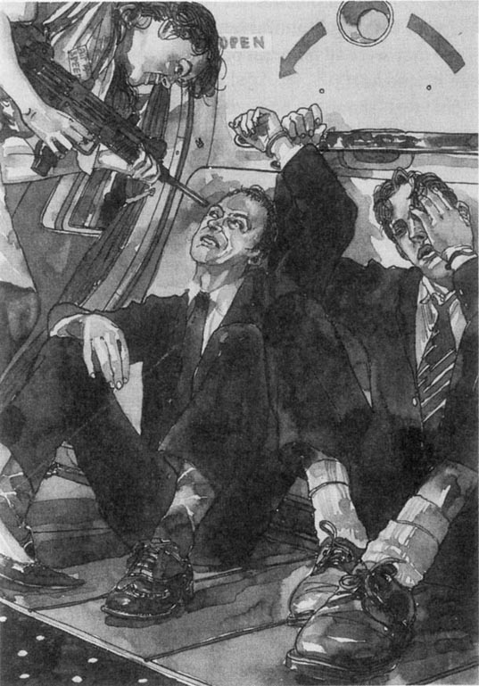
“你感觉怎么样，年轻的朋友？”卡尔问。
“头有点儿痛，”哈拉尔德回答，“而且我也看不清东西。”
“这个人需要医生。”卡尔对那个姑娘说，语气中充满愤怒。
她哈哈大笑。“这取决于你的妻子，而不是我，”她说，“如果我们的弟兄回来了，他就能看医生。否则的话，门儿都没有。”她用枪指着哈拉尔德的头，又是一阵大笑。此时她倒是一点儿都不紧张了。
卡尔感到很恼火。他恨这些劫机犯，也生自己的气，因为他的行动不够迅速，没有帮成哈拉尔德。恼火也有好处，他生气时倒是不觉得那么恐惧了。
“你多大了？”他问那个姑娘。
她没有理睬。
“我问了你一个问题！”他说，“你多大了？18，还是19？你还不太大，没错吧，对吗？你只是个孩子！”
姑娘的脸变红了。“我已经20岁了，”她恶狠狠地说，“我不是个孩子了！”
“你看起来还像个孩子，”卡尔说，“你只比我的女儿大两岁。你为什么要做这种事情呢？”
姑娘哈哈大笑。但她却没有迎着卡尔的目光。“为什么？你不会明白的。”
“我想你也不明白你到底在干什么。”卡尔说，“在这架飞机上，不曾有任何人伤害过你。我们都是无辜的。你刚才杀死的那个人——他不是间谍，只是个美国商人。你以前连见都没有见过我们。你为什么要杀死我们呢？”
姑娘看上去既忧虑又恼火。她用枪点着卡尔的头。“我不想杀你们，”她说，“我想让你们的政府——你的妻子——放了我们的弟兄。”
“好，我知道了。”卡尔小心翼翼地说。他瞅瞅姑娘手里的枪和她的脸色，但是他并不是真的害怕，因为他的怒火还没有消。他像跟自己的女儿争论那样跟这个姑娘争论起来：“但是别忘记你的弟兄们做过的事情。他们试图往飞机上放炸弹，他们企图炸死像我们这样的无辜者。为什么？”
“你们不是无辜的！”姑娘说，“没有谁是无辜的！像你、你妻子，还有那个美国人那样的人——你们有钱有势，都是从我们老百姓身上刮取的，从我们身上刮取的！你知道我小时候过的是什么样的生活吗？十口人住在一间房子里，里面没有洗澡间，没有水，什么都没有！我的父母没有工作，没有护照，没有国家，一无所有！我们和其他1万多人住在一个小镇子里。可距小镇十公里的地方，住的就是像你这样的富人，他们有漂亮的大房子、高级轿车、华贵的衣服——他们也都是无辜的，就像你一样！我告诉你，没有一个是无辜的！”
她在喊叫着，几乎是哭喊着——眼里含着泪水。卡尔和哈拉尔德非常小心地看着她手里的枪。“可怜的姑娘，”卡尔心想，“可怜的小杀人犯。”
小胡子从机长室走出来，他把手放在姑娘的胳膊上。“别说了，小花朵，”他说，“别搭理他们，这不是你要做的事儿。”随即，他给了卡尔一个耳光。“闭上你的嘴！”他说，“多想想你老婆吧。你看见时间了吗？我想她已经把你忘了！”
卡尔哼了一声，用手捂着嘴。嘴里流血了，一颗牙被打掉了。然后他看看手表。已经2:23了。再有七分钟，又够半个小时了。
“对不起，我的朋友，”他悄声对哈拉尔德说，“你也跟他们拼打了，我也尽力去说服了，但是都没用。我想这可能是我们的最后一次旅行了。”
chapter-a103_ 11
Chapter 11
Helen Sandberg decided she liked Colonel Carter. He spoke clearly, he explained his ideas carefully, and he listened to what she said. He did not try to be difficult because she was a woman. Best of all, they had made a plan together. A good plan, she thought; it could really work. Perhaps.
She looked at her watch: 2.23. 'Right, Colonel, get your men ready. I'll send the first prisoner down to you when they arrive. But where are they? Michael, have they arrived yet?'
'No, Prime Minister. Not yet.'
'Then where the hell are they? Can you get Inspector Holm on the car radio?'
'They're trying, Prime Minister.' Michael spoke into the telephone. Colonel Carter left the room and Helen walked up and down slowly, watching the clock. 2.24. 2.25. 2.26.
'They've got him, Prime Minister! He says... he says one of the cars has had an accident in the rain. He thinks he can be here in ten minutes.' Michael looked up. There was no smile on his face at all now.
'Ten minutes! What's he driving—a police car, or a bicycle?' Helen banged her fist on the table. 'We've got four minutes left. OK. I want to talk to the hijackers. Get them on the radio.'
She sat down at the table while Michael called the plane. Colonel Carter came in and stood behind her. A voice came on the radio.
'Well, Mrs Sandberg. Where are our brothers?'
'They're coming,' said Helen. 'They'll be here in ten minutes.'
'That is too late. I gave you half an hour. Your husband will die in four minutes.'
Helen pressed her hands flat on the table, so hard that the ends of her fingers went white. 'Please don't do that,' she said.
'I am sorry, Mrs Sandberg. But if my brothers are not here in four minutes, your husband will die.'
'Don't you want to see your brothers?' she asked quickly. 'I promise you, if you kill my husband, you'll never see them again.'
There was a pause while no one spoke. Then the radio answered. 'Four minutes, Mrs Sandberg.'
Helen spoke clearly, slowly, and loudly. She filled her voice with all the anger she had in her body. 'Listen, you murderer. I need just ten minutes to get your brothers to this airport. Then I will send them to the plane. But if you kill my husband, or anyone else, then I promise you that your brothers will die, on the tarmac in front of that plane. Is that what you want? Or will you wait ten minutes?'
There was another, longer pause. Helen stared out into the night. She did not see anything.
'All right. Ten more minutes.'
'Thank you. Now, there is one more thing. The passengers.'
'What about them?'
'You must set them free before I send your brothers to the plane.'
The voice on the radio laughed. 'Because you are a woman, do you think all men are stupid, like your husband? Send me our brothers, then refuel the plane, and then I will send you the passengers.'
'No,' answered Helen. She looked at Colonel Carter. 'This is how we will do it. I will send you one of your brothers and then you must send me the passengers. When we have all the passengers, then we will refuel the plane and send you your other brother.'
The voice laughed again. 'Do you think you are buying cheap fish from a child in the market? Send us one brother, then, and we will send you one hundred passengers. Refuel the plane and send us the other brother, and we will send you the other passengers. But the pilot and your husband must come with us to another country. We will set them free later.'
Helen looked at Colonel Carter. There was the beginning of a smile on her face. She could see that he agreed with her. She waited for a moment longer, to worry the hijacker.
'Is it agreed, woman? Or do I kill your husband now?'
'I agree. I will send your first brother to you in ten minutes.'
bang v. to strike sharply. 重击，碰撞。
fist n. the shape of the hand with the fingers closed in tightly. 拳，拳头。
pause n. a short but noticeable break in activity or speech. 停顿。
agree with to be in accordance with someone. 同意。
第十一章
第十一章
海伦·桑德伯格认为她是喜欢卡特上校的。他口齿清晰，仔细地讲解他的想法，但同时又很注意倾听她的意见。因为她是位女性，卡特尽量讲解得深入浅出。最关键的是，他们共同制订了一个计划。在她看来，这是一个不错的计划；它会奏效的。很有可能。
她抬手看看手表：2:23了。“好吧，上校，让你的人就位。等那两个囚犯一到，我马上给你送过去一个。不过他们在哪儿呢？迈克尔，他们到了吗？”
“没有，首相，还没有。”
“他们到底在哪儿呢？你能通过汽车上的无线电和霍尔姆巡查官取得联系吗？”
“他们正在试着联系呢，首相。”迈克尔在电话里讲。卡特上校离开了房间，海伦在房间里慢慢地踱来踱去，看着挂钟。2:24，2:25，2:26。
“联系上了，首相！他说……他说因为下雨，有一辆车出事了。他想十分钟之后可以赶过来。”迈克尔抬起头。此时他的脸上没有一丝笑容。
“十分钟！他开的是什么车——警车还是自行车？”海伦用拳头把桌子捶得咚咚响。“我们只剩下四分钟了。好吧。我想跟劫机者谈一谈。接通他们的无线电。”
她在桌边坐下，与此同时迈克尔正在跟飞机取得联系，卡特上校走进来，站在她的身后。无线电里传过来一个声音。
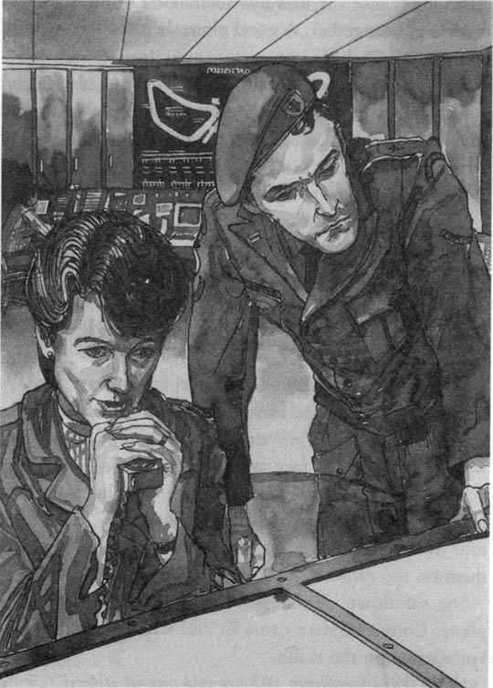
“嗨，桑德伯格夫人。我们的弟兄在哪儿？”
“他们马上就到，”海伦说，“他们十分钟后到达。”
“太晚了。我给了你半个小时的时间。四分钟后你的丈夫将被杀死。”
海伦伸开双手平压在桌子上，她非常用力，指尖都变白了。“请不要这样做。”她说。
“对不起，桑德伯格夫人。但是，如果四分钟之后我们的弟兄还没来，你的丈夫就会死。”
“难道你们不想见你们的弟兄了吗？”她不假思索地问道，“我可以负责任地告诉你，如果你们杀死了我丈夫，你们将永远也见不到他们了。”
没人说话，出现了一片沉默。随后，无线电里传来了回答。“只剩四分钟了，桑德伯格夫人。”
海伦讲话的声音清晰、缓慢而且洪亮。她把压抑在心里的所有愤怒都凝聚到了她的声音里。“听着，你们这些杀人犯。我只需要十分钟的时间把你们的弟兄带到机场来，然后我就把他们送到飞机上。但是如果你们杀了我丈夫，或者其他任何一名乘客的话，那么我发誓你们的弟兄将被处死，就死在飞机前面的跑道上。这是你们想要的结局吗？还是你们愿意再等十分钟？”
又是一阵更长的沉默。海伦盯着外面的夜空。她什么也看不见。
“好吧。再给你们十分钟。”
“谢谢。现在，还有一件事情，就是那些乘客。”
“他们怎么了？”
“在我把你们的两个弟兄送上飞机之前，你们必须先释放他们。”
无线电里的声音大笑起来：“因为你是一个女的，所以你就认为所有的男人都很愚蠢，就跟你丈夫一样吗？把我们的弟兄送过来，给飞机加满油，然后我再释放那些乘客。”
“不行，”海伦回答。她看着卡特上校，“我们打算这么办。我先把你的一个弟兄送过去，然后你释放所有的乘客。等所有的乘客获释之后，我们再给飞机加油，并把你们的另一个弟兄放回去。”
那声音又大笑起来：“你以为你是在市场上从一个孩子手里买便宜的鱼呀？先把我们的一个弟兄送回来，然后，我们就释放100名乘客。你们给飞机加满油，再把另一个弟兄送过来，我们就把剩下的乘客放回去。不过飞行员和你丈夫必须跟我们一起飞到另一个国家去。之后我们再释放他们。”
海伦注视着卡特上校。她的脸上第一次露出了笑容。她能看得出来，他同意她的建议。她等了好一会儿，好让这个劫机犯着急。
“女士，你是同意呢？还是我现在就把你的丈夫杀了？”
“我同意。十分钟后我把你们的第一个弟兄给你们送过去。”
chapter-a103_ 12
Chapter 12
Carl felt his broken tooth with his tongue. The door of the Captain's cabin was open and he could see the bearded hijacker sitting inside. He had a long nose and dark hair and his eyes looked green from the light of the instruments in the dark cabin. He held his gun near his mouth and touched it gently with his lips as he waited.
Carl had heard half of the conversation. Eight of the ten minutes had gone. Now that he could do nothing, he felt afraid. He could feel his hand in the handcuffs shaking. Harald felt it too and held Carl's hand with his own.
'Don't worry, Mr Sandberg,' Harald whispered. 'We'll get out of here.'
'Perhaps,' Carl answered. 'And perhaps not. But I don't want these murderers to go free.'
'Ssh!' Harald whispered. Carl looked up and saw the girl watching them. Then, suddenly, the bearded man shouted, 'They're coming! Look! Get ready!'
The girl went into the Captain's cabin. Harald and Carl stood up and looked through a window. They saw three men pushing some steps across the tarmac. The men put the steps outside the plane door and then went back again. Then two more men came out of the building. They were wearing bright yellow coats because of the rain. One man walked towards the plane.
'Come away from the door! Quick!' The girl unlocked the handcuffs and pushed Harald and Carl back to their seats. Then she started to open the door.
'Wait! Turn the lights out and stand back from the door!' said the bearded man. 'They will try to shoot us in the light from the door.'
The door opened and the man in the yellow coat came into the plane. He was thin, with very short hair. The girl shut the door, the lights came on, and the man shut his eyes in the bright light. The girl and the bearded man put their arms around him, laughing.
'Free! You are free now, brother! And the other one, is he safe? Come into the cabin, let's talk!'
Carl and Harald watched sadly. 'So now she will give them what they want, because of me,' said Carl quietly. 'We will be safe, but they will go free to bomb another plane, because of me.' He held his head in his hands.
'Wait, Mr Sandberg,' said Harald. 'Your wife isn't stupid, you know. This game has not ended yet. Sit still, and be ready.'
The other passengers sat quietly, waiting to be free.
instrument n. an object used to help in work. 仪器，工具。
conversation n. an informal talk in which people exchange news, feelings, and thoughts. 对话，谈话。
turn out to stop (a gas, oil, or electric lights, heating apparatus, etc.). 将（煤气、油、电灯、暖气等）关上，熄灭。
第十二章
第十二章
卡尔用舌头舔了舔他的断牙。机长室的门开着，他能看见小胡子劫机犯坐在里面。他长着长长的鼻子，一头黑发，黑乎乎的机长室里，飞行驾驶设备的光衬得他的眼睛有些发绿。在他等待时，他把枪举到嘴边，用嘴唇轻轻地触碰着他的枪。
卡尔听到了一半的对话内容。十分钟已经过去了八分钟，手足无措的他此时有些恐惧，他能感觉到自己戴着手铐的那只手在颤抖。哈拉尔德也感觉到了，他用手抓住了卡尔的手。
“别担心，桑德伯格先生，”哈拉尔德低声说，“我们会离开这儿的。”
“也许吧，”卡尔回答，“也许不能。只是我不想放走这些杀人犯。”
“嘘！”哈拉尔德小声制止。卡尔抬起头，看见那个姑娘正注视着他们。就在此时，小胡子突然大喊：“他们过来了！瞧！做好准备！”
那个姑娘进了机长室。哈拉尔德和卡尔站起来，从窗户往外看。他们看见有三个人正穿过飞机跑道推来了舷梯。这些人把舷梯放在飞机门口，又返身回去了。之后又有两个人从机场大楼里走出来。因为下雨，他们都穿着亮黄色的雨衣。其中有一个人径直走向了飞机。
“把门让出来！快点儿！”姑娘给哈拉尔德和卡尔打开手铐，把他们推回到座位上。然后她开始开门。
“等等！把灯关了，往后退，把门让开！”小胡子说，“他们会借着门口的灯光向我们开枪的。”
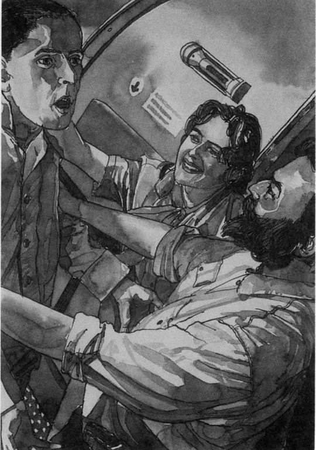
门打开了，一个穿黄色雨衣的男子进了飞机。他很瘦，留着很短的头发。姑娘关上了门，灯随即打开，强烈的灯光刺得他闭上了眼睛。姑娘和小胡子都抱着他，开怀大笑。
“自由了！你现在自由了，兄弟！另一个兄弟怎么样，他安全吗？来，我们到机长室里聊聊！”
卡尔和哈拉尔德沮丧地看着这一切。“也就是说，现在她要答应他们的一切要求了，就因为我，”卡尔轻声说，“我们会安全的，但是他们也会获释的，他们还会去炸另一架飞机，就因为我。”他双手抱头。
“耐心一点儿，桑德伯格先生，”哈拉尔德说，“你知道，你的妻子可不笨。游戏现在还没有结束。坐好，做好准备。”
其他的乘客都安静地坐着，等着获释。
chapter-a103_ 13
Chapter 13
Helen Sandberg stood by the control room window, staring at the plane. 'Come on,' she said. 'Why is that door shut? Where are the passengers?'
'The hijackers won't set them free,' said Inspector Holm. 'I told you, Prime Minister, this is a serious mistake.'
'Be quiet, man,' said Colonel Carter. 'I think we've got something on the radio.'
Beside him, a soldier was turning the controls of a small army radio. Suddenly, the voices of one of the hijackers and the prisoner came into the room.
'So how many soldiers are there in the airport building, my brother?'
'I didn't see any soldiers, only police.'
'That's strange! No soldiers at all?'
'I did not see any, brother.'
'Very strange. But these are not military people. They do not have many soldiers. Perhaps the woman will do what she says, then.'
'What's happening, Colonel?' Helen asked. 'Those are the hijackers' voices. How can we hear them?'
The Colonel laughed. 'Well, madam, you can see it's raining, can't you? We didn't want our poor prisoner to get wet, so we gave him a nice yellow raincoat, you see. But it was an expensive raincoat, because one of its buttons is a small radio transmitter. So now we can hear everything they say and we know where they are on the plane!'
Helen smiled. 'Good idea, Colonel. I hope it helps.'
'Prime Minister,' Michael interrupted. 'They're coming!'
Helen looked through the window. The door of the plane was open and people were coming down the steps one after another. Some of them started to run towards the airport building, and a few knelt down on the wet tarmac.
'What are they doing?' Helen asked.
'Praying, perhaps?' said Michael. 'To thank God that they're alive?'
Police and doctors came out of the building to help the passengers. Helen stood and watched through the binoculars. She did not see Carl.
'Ninety-nine, a hundred. That's it, then,' said Colonel Carter. The plane door closed. 'Now we move on to the next step of our plan. Goodbye, Prime Minister.'
Helen turned and saw that the Colonel was putting on white clothes on top of his army uniform. He put several grenades in the coat pocket, and a machine gun into a long pocket inside the coat. He smiled at her. 'I must help my men refuel the plane.'
'May God go with you, Colonel,' she said.
controls n. switches, levers, etc. by which a machine is operated or regulated. （机器的）操纵装置。
transmitter n. an apparatus that sends out radio or television signals. 无线电发送装置。
kneel v. to go down or remain on the knees. 跪，跪下。
grenade n. a small bomb which can be thrown by hand or fired from a gun. 手榴弹。
第十三章
第十三章
海伦·桑德伯格站在机场控制室的窗边，目不转睛地看着飞机。“瞧，”她说，“为什么飞机的门又关上了？乘客们在哪儿？”
“劫机犯不会释放他们的，”霍尔姆巡查官说，“我告诉过您，首相，这是一个严重的错误。”
“安静，先生，”卡特上校说，“我觉得无线电里收到了什么声音。”
在他旁边，一个士兵正在调一台小型军用无线电。突然，小收音机里传来了其中一个劫机者和那个囚犯说话的声音。
“那么机场大楼里有多少士兵，兄弟？”
“我一个士兵也没看见，只有警察。”
“奇怪了！一个士兵也没有？”
“我一个也没有看见，兄弟。”
“莫名其妙。但这些人不是军人。他们也没有多少士兵。那么，也许这个女人真的说话算数。”
“怎么回事，上校？”海伦问，“这是劫机者们的声音，我们怎么能听得见呢？”
上校放声大笑。“嗯，夫人，您瞧天在下雨，对吗？我们可不想把我们可怜的囚犯淋湿了，所以我们给他穿上了一件很不错的黄雨衣，您也看到了。不过那可是一件价值不菲的雨衣，因为它上面有一个扣子是一台小型无线电传送机。所以我们现在能听到他们所有的谈话内容，并知道他们在飞机上的位置！”
海伦笑了：“好主意，上校。我希望这能奏效。”
“首相，”迈克尔插话说，“他们来了！”
海伦往窗外看去。只见飞机的门敞开了，乘客们在一个接一个地走下飞机的舷梯。有一些乘客开始往机场大楼方向跑来，有几个跪倒在湿漉漉的飞机跑道上。
“他们在做什么？”海伦问。
“也许是祈祷吧？”迈克尔说，“感谢上帝他们还活着？”
警察和医生走出机场大楼去帮助这些乘客。海伦站起来用双筒望远镜往外看。她没有看见卡尔。
“99，100。那么，正好。”卡特上校说。飞机的门关上了。“现在，我们该实施下一步的计划了。再见，首相。”
海伦转过身，看见上校正在往他的军装外面套着白色的衣服。他往衣服的外口袋里装了几枚手榴弹，衣服里面的大口袋里则装了一杆机枪。他向她微笑着：“我必须帮我的伙计们给飞机加满油。”
“愿上帝保佑你，上校。”她说。
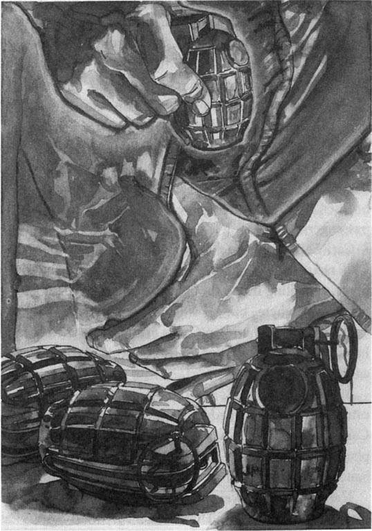
chapter-a103_ 14
Chapter 14
The lights in the plane went out again. There were only eleven of them left now: Carl Sandberg and Harald, four crew, and five Americans. They sat together in the middle of the plane. The girl and the young man in the black shirt watched them.
Through the window, Carl saw the fuel tanker drive towards the plane. It stopped, and five men in white clothes got out. The pilot went to the front of the plane to work the controls, and the men started to refuel the plane.
Then he saw another man in a yellow raincoat come out of the airport building.
The bearded hijacker started to talk very excitedly. 'Is it him? Yes, it is! Our leader! My brother and sister, we have done it! Now, I must welcome him at the door. You, brother, watch the pilot in the cabin, and sister, watch the passengers.'
Carl Sandberg watched the man in the yellow coat walk nearer. He could only see one man at the back of the plane, refuelling it. He thought the others were under the plane somewhere, but he did not know where.
Harald put his hand on Carl's arm. Carl looked at him. Harald did not speak, but he was looking at the girl, very carefully.
As the door opened, and the man with the yellow coat came in, the girl turned to look. Through the window, Carl saw a man in a white coat run out from under the plane with something that looked like a grenade in his hand. Two other men in white ran out behind him.
The man's arm went up and he threw the grenade through the open door. There was a very loud BANG! at the front of the plane, and a flash of white light that burned Carl's eyes. Almost immediately there was an even louder BANG! BANG! and two more flashes of white light.
Carl could not move. The noise was so loud and the light so bright that he sat still as a stone. He saw the girl hijacker and the bearded man standing quite still too, with their guns in their hands and their mouths open. Then a man in white ran through the door with a gun in his hand. He shot the girl and the bearded man before they could move. The hijacker in the black shirt came out of the Captain's cabin behind the man in white, but two other men in white came through the door and shot him too. The two prisoners, in their yellow raincoats, tried to get to the door, but the men in white knocked them to the floor and handcuffed their hands behind their backs.
Carl looked down. The girl was lying on the floor of the aisle beside him. He thought he saw her hand move towards her machine gun, but then one of the soldiers in white ran down the aisle and shot her again through the head. Another soldier pulled her away by her legs and her long hair left blood along the floor.
tanker n. a ship, plane, or railway or road vehicle specially built to carry large quantities of gas or liquid, esp., oil. 油轮；运油飞机、火车或货车；油罐车。
immediately adv. at once. 立刻，马上。
第十四章
第十四章
飞机里的灯又熄灭了。现在，机上只剩下11个人了：卡尔·桑德伯格和哈拉尔德，四名机组人员，还有五个美国人。他们集中坐在飞机中部。那个姑娘和穿黑色衬衫的年轻人在看着他们。
透过窗户，卡尔看见燃料罐车向飞机开过来。车停下来之后，五个穿白衣服的人下来了。飞行员到飞机前部去操作，那些人开始给飞机加油。
随后，他看见另一个穿黄色雨衣的人走出了机场大楼。
小胡子劫机犯开始异常激动地说起话来：“是他吗？是的，就是他！我们的头儿！兄弟姐妹们，我们成功了！现在，我要到门口迎接他。你，兄弟，到机长室看着飞行员，妹妹，看着这些乘客。”
卡尔·桑德伯格眼瞅着那个穿黄色雨衣的人越走越近。他只能看见有一个人正在飞机的尾部给飞机加油。他猜想其他的人一定在飞机的下面，但具体在哪个位置，他也不清楚。
哈拉尔德把手放在卡尔的胳膊上。卡尔看着他。哈拉尔德没有作声，因为他正在全神贯注地看着那个姑娘。
飞机的门开了，穿黄色雨衣的那个人走了进来，姑娘转过身看了看。透过窗户，卡尔看见一个穿白色外衣的人从飞机底下跑出来，那人手里拿着一个东西，看样子像是一枚手榴弹。在他身后，还跑着两个穿白色衣服的人。
那人扬起胳膊，把手榴弹从开着的门扔了进来。从飞机前部传来“嘟！”的一声巨响，一道刺眼的白光在卡尔眼前划过。紧跟着，又传过来两声更巨大的“嘟！嘟！”声，又是两道白光划过。
卡尔动弹不得。震耳欲聋的响声和刺眼的白光使他像石头一样呆坐着。他看见那个女劫机犯和小胡子也愣在那里了，手里拿着枪，目瞪口呆。转眼间，一个穿白色外衣的男子拿着枪冲了进来。在那个姑娘和小胡子还没有回过神来的时候，他便举枪向他们射击。穿黑色衬衣的劫机犯从机长室出来，冲到穿白色外衣的男子身后。但是又有两名穿白色外衣的男子从门口冲了进来，将其击毙。那两名囚犯，他们穿着黄色雨衣，想趁机往门口溜，但被穿白色大衣的人打倒在地，还把他们的手扭到背后铐了起来。
卡尔低下头。他看见那个姑娘就躺在离他不远的飞机过道上。他觉得他看到姑娘的手悄悄移向她的机枪，但是一个穿白色衣服的士兵顺着过道冲过来，朝她的头上又开了一枪。另一个士兵拽着她的腿把她拖到一边，鲜血顺着她的长发流到了地板上。
chapter-a103_ 15
Chapter 15
Helen Sandberg heard the bangs too, and when she saw the white light, she thought the plane was burning. For about half a minute there was nothing but loud bangs and white flashes, and then there was nothing. There were no lights at all in the plane and no sounds either.
She turned to Michael. 'Can't you get them on the radio?'
'I'm trying, Prime Minister. But I think it's broken.'
She walked to the door. 'I'm going out.'
Inspector Holm stood in front of her. 'You must not do that, Prime Minister. We don't know what's happened.'
'That's why I'm going,' she said. 'I'm going to find out. I don't care what happens to me.'
He was a big man but he was afraid of her. She walked straight past him and down the steps. In the departure lounge there was a crowd of passengers waiting to get on other planes, and also a lot of doctors, police, and news paper journalists. She walked straight past them all and out onto the tarmac. It was dark and cold, and the wind blew rain into her face. When she was about fifty metres away from the building she heard some people behind her, but she did not stop.
The door of the plane opened and a man in white came out. He had a gun in his hand and he came backwards down the steps. After him came two men in yellow raincoats with their hands behind their backs, and then two other men in white with guns.
Two police officers came after her.
'Wait, Prime Minister,' they said. 'Please stop, it's dangerous.'
'Not now,' she said. 'It's not dangerous any more.' She walked on through the rain without stopping, and the young police officers walked beside her. They were afraid to touch her and they did not know what to do. Some journalists ran after them.
Two men in blue came out of the plane — the pilot and copilot. Then some men in suits. She was quite near the plane now and there were quite a lot of newspaper photographers around her, but she did not stop walking.
A big young man came out of the plane with a short, thin, grey-haired one—Harald and Carl. Helen could see that Carl's face was very white and there was blood on his mouth, but he could walk all right.
Carl saw her coming, a small strong figure walking through the rain, with a crowd of police and photographers around her. 'Harald, my friend,' he said. 'I think we're in the news again. You're going to have another photo to show your little son on his birthday.'
Carl and Helen Sandberg met at the bottom of the steps in the darkness and the rain. And Carl was right; there was a photo of it in every newspaper in the world the next day.
nothing but nothing other than; only. 只不过是，仅仅。
happen to (of an event) to take place and have an effect on. （指事件的）发生，对……有影响。
departure n. the action of departing; an act of departing. 分离，离开。
lounge n. a comfortable room for sitting in, as in a house, hotel, or inn. （房屋、旅馆、客栈中之）休息室。
backwards adv. towards the back. 向后地。
run after to chase. 追逐。
第十五章
第十五章
海伦·桑德伯格也听到了巨大的爆炸声。当她看见白光划过的时候，她以为是飞机着火了。大约半分钟之后，只有巨大的声响和刺眼的白光，之后一切都恢复了平静。飞机上既没有灯光，也没有声响。
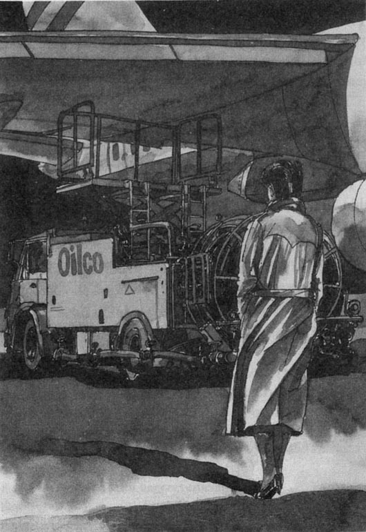
她转身面对迈克尔：“无线电里听不见他们吗？”
“我正在努力，首相。不过，我想线路可能断了。”
她走到门口：“我要出去。”
霍尔姆巡查官站到她跟前：“您不能出去，首相。我们还搞不清楚外面的情况呢。”
“这就是我要出去的原因，”她说，“我要去弄明白到底是怎么回事。我不在意自己的安危。”
虽然他很高大，但很惧怕她。她径直从他身边走过，下了楼梯。在候机大厅里，一大群乘客在等着转机，还有很多医生、警察和新闻记者。她从他们身边走过，径直来到了飞机跑道上。外面又黑又冷，狂风夹带着雨水吹打在她的脸上。在她走出机场大楼大约50米的时候，她听见有人在后面跟着她，但是她没有停下脚步。
飞机的门打开了，一个穿着白色衣服的人走了出来。他手里拿着枪，背转身从飞机的舷梯上走了下来。他身后是两个身穿黄色雨衣的男子，他们的手都背在身后，再往后是两名穿白色衣服的男子，手里都拿着枪。
跟在她身后的是两名警官。
“等一等，首相，”他们说，“请停下，危险。”
“现在不危险了，”她说，“已经不再危险了。”她继续在雨中走着，一步不停，年轻的警官们走在她的旁边。他们不敢碰她，也不知道怎么办好。有一些新闻记者追着他们过来了。
两个身穿蓝色衣服的男子从飞机里出来了——是飞行员和副飞行员。随后下来的是一些穿西装的人。她现在离飞机已经很近了，大批的新闻摄影记者围着她，但她还是没有停下脚步。
飞机里走出一个高大的年轻人和一个又矮又瘦，头发花白的人——是哈拉尔德和卡尔。海伦看见卡尔脸色苍白，嘴上还有血迹，不过他的行动还算自如。
卡尔看着她向自己走来，矮小结实的身影走在雨中，旁边围着一大群警察和摄影记者。“哈拉尔德，我的朋友，”他说，“我想我们又要出现在新闻里了，你又会有一张照片可以在小儿子过生日时给他看了。”
在黑暗和大雨中，卡尔和海伦·桑德伯格在飞机舷梯下终于见面了。而且，卡尔说得对；第二天全世界所有的报纸上，都刊登了这个事件的照片。
ACTIVITIES: Before Reading
ACTIVITIES
Before Reading
1．Read the story introduction of the book. How much do you know now about the story? Choose Y (Yes) or N (No) for each sentence.
1) People who hijack a plane are terrorists. Y / N
2) The hijackers are using bombs to kill the passengers. Y / N
3) The Prime Minister is on the plane. Y / N
4) Someone from the Prime Minister's family is on the plane. Y / N
5) The hijackers know who this person is. Y / N
6) The hijackers will wait for hours if they have to. Y / N
2．What should you do if you are a passenger on a hijacked plane? Look at these ideas and decide which are sensible and which are not sensible. Explain why you think this.
If your plane is hijacked you should...
1)... stay in your seat and be very quiet.
2)... argue with the hijackers and tell them they are stupid.
3)... tell jokes and try to make the hijackers laugh.
4)... talk loudly to show you are not afraid.
5)... try to remember what the hijackers look like.
6)... draw a picture of the hijackers to show to the police.
7)... try to attack the hijackers and get their guns.
8)... pretend to feel very ill and ask for a doctor.
ACTIVITIES: While Reading
ACTIVITIES
While Reading
1．Read Chapters 1 to 7. Choose the best question-word for these questions, and then answer them.
Who / What / How / Why
Carl's story — Chapters 1, 2, 4, 6
1)... was Harald's job?
2)... was the air hostess holding when she came out of the pilot's cabin?
3)... many hijackers were there?
4)... group did the hijackers belong to?
5)... long were the two prisoners in prison for?
6)... did Harald put coffee on Carl's passport and eat it?
7)... did Harald say to the hijacker about Carl?
8)... did the hijackers take to the front of the plane?
9)... do you think Carl is?
Helen's story — Chapters 3, 5, 7
1)... did Helen Sandberg groan at 12.15 a. m.?
2)... many people were there on the plane?
3)... three things did the hijackers want?
4)... did the hijackers say they would do in one hour's time?
5)... did the short fat man die?
6)... did Colonel Carter want to do?
7)... was Helen angry with Inspector Holm?
8)... arrived at the airport to see Helen?
2．Read Chapters 8 to 11. Are these sentences true (T) or false (F)? Rewrite the false ones with the correct information.
Carl's story — Chapters 8, 10
1) The girl fired her gun in the plane because an American passenger hit her.
2) Harald knocked two of the terrorists to the ground.
3) Nobody tried to help Harald when he attacked.
4) The hijackers handcuffed Harald to the door.
5) The hijackers learnt who Carl was from the newspaper photograph in Harald's pocket.
6) Carl argued with the girl because he was afraid.
7) Carl told her that the man who died was a spy.
8) When the girl was young, her family were very poor.
9) Carl felt sorry for the girl and Harald.
Helen's story — Chapters 9, 11
1) Helen liked both the ambassadors.
2) Both ambassadors wanted to use their own soldiers to attack the plane.
3) Helen thought it was a good idea to attack the plane and 'take it apart'.
4) The hijackers knew that Carl was the Prime Minister's husband.
5) Helen and the Colonel made a plan together.
6) Helen told the hijackers that she needed another twenty minutes to get the prisoners.
7) The hijackers said they would wait for ten minutes.
8) The hijackers wanted Carl and Harald to go with them to another country.
3．Before you read Chapters 12 to 15, can you guess the answers to these questions?
1) Will Inspector Holm arrive with the prisoners in time?
2) Will Colonel Carter take the plane from the hijackers?
3) Will Carl or Harald be hurt in the attack?
4) Will any of the other passengers or crew be killed?
5) Will the three hijackers be killed or put in prison?
6) Will the two prisoners be killed or taken back to prison?
4．Read Chapters 12 to 15. Then put these sentences in the right order, to make a summary.
1) He and his men drove the fuel tanker to the plane, and began to refuel it.
2) A few minutes later one hundred passengers left the plane.
3) The two prisoners were knocked down and handcuffed.
4) She met her husband at the bottom of the plane steps.
5) The two prisoners, both wearing yellow raincoats, came out of the airport building.
6) As he entered the plane, one of the soldiers threw a grenade through the open door.
7) The first prisoner crossed the tarmac and went into the plane.
8) More grenades exploded, and then the soldiers ran in and shot the three hijackers.
9) When the plane door closed again, the Colonel got ready.
10) Then the second prisoner crossed the tarmac to the plane.
11) When the noise of grenades and guns stopped, Helen began to walk across the tarmac to the plane.
ACTIVITIES: After Reading
ACTIVITIES
After Reading
1．What did Colonel Carter tell Helen about his plan? Put their conversation in the right order, and write in the speakers' names. Helen speaks first (number 5).
1) ______ 'That's the plan, Prime Minister. We'll wear white coats, like mechanics, and drive the fuel tanker up to the plane.'
2) ______ 'Right. And when he's on the plane, they must let one hundred passengers out, as they agreed.'
3) ______ 'When they open the door for the second prisoner, we'll throw in grenades, and attack at once.'
4) ______ 'They'll be all right. For a few seconds, during the grenade attack, the hijackers won't be able to move. A few seconds is all we need.'
5) ______ 'We haven't got much time, Colonel. What are we going to do?'
6) ______ 'Ah, the refuelling. So you and your men—?'
7) ______ 'The most important thing for the terrorists is the prisoners. So when they arrive, we'll send one to the plane at once.'
8) ______ 'But what about the passengers still inside?'
9) ______ 'Yes. We wait until those hundred passengers are on the tarmac. Then we must refuel the plane.'
10) ______ 'Well, good luck, Colonel.'
11) ______ 'Excellent! And how will you get inside the plane?'
2．Perhaps one of the passengers who was on the plane at the end wrote to a friend about the hijack. Complete the letter with these words from the story. (Use one word in each gap.)
aisle, ambassador, attack, bang, before, bullets, commandos, die, fired, flash, fuel, grenades, handcuffed, hijack, hijackers, machine, nervous, seconds, ship, shot, shouted, tarmac, worst
Dear Sam
I'm staying in the US ______'s house here, with the other four Americans that were in the ______ with me. I'm fine, but all of us still get very ______ when we hear a sudden ______ or there's a ______ of bright light. It'll take time, I suppose.
It was a terrible thing, Sam. I think the ______ moment was when they ______ poor Bill. It was the girl who did it, too. I stood up and ______ at her, and she ______ her ______ gun at me. I felt the ______ going through my hair.
There was one brave man who ran up the ______ and tried to ______ the ______. He didn't win, of course. They ______ him to the door and told him he'd be the next to______.
When I saw the ______ tanker coming, I knew what was going to happen. Those ______ were good, Sam. They came straight in after the ______ and got the hijackers ______ they could move. It was all over in ______.
But when we got out of the plane, there was poor Bill's body, just lying on the ______. I'll never forget that.
I'll see you in a few weeks — I'm coming home by ______! Best wishes,
Jim
3．Perhaps this is what some of the characters in the story were thinking. Which five characters were they, and what was happening in the story at that moment?
1) Poor Prime Minister! She looks so worried. Now that the hijackers know that Carl is her husband, it's even worse for her. Giving her that message was the most unpleasant thing I've ever had to do...
2) Maybe this is my chance to do something... That girl is very young and nervous, and she's crying. She's probably never fired a gun and killed someone before. Nobody's looking at us at the moment. If I run quickly, perhaps I can get one of the guns...
3) That stupid woman has no idea how to deal with terrorists. They really need a man to make these decisions. Well, I've got the prisoners, and I'm not in a hurry. If anyone asks, I'll say... there's been an accident.
4) I hope she's going to listen to me this time. She's an intelligent woman, but she's quite difficult sometimes. I'm sure our SAS men could deal with this — better than her own soldiers. Ah, they're calling us in to see her now...
5) I feel so nervous. It's easy for the others — they just have to sit and be passengers. I'm the one who has to talk to people and do things. They must do it soon, surely. Or we'll — yes! He's waving to me! At last! Now the NJA can begin its work, and soon our brothers will be free...
4．Here are some titles for the fifteen chapters of Skyjack. Write the number of each chapter next to its title and write them out in the correct order.
______ The girl's story
______ Blood on the tarmac
______ Welcome aboard
______ A change of plan
______ Helen, Carl and Harald
______ The NJA choose a passenger
______ One brother in a yellow coat
______ Helen agrees with the hijackers
______ The Colonel, the Inspector, and the Prime Minister
______ Meeting the ambassadors
______ Mummy is late
______ The passengers leave
______ Bang, flash—death
______ Harald is brave
______ Coffee and—a passport
5．What do you think about hijacking? Do you agree (A) or disagree (D) with these sentences? Explain why.
1) Helen was wrong to bring the prisoners to the airport.
2) The girl hijacker had good reasons to be a terrorist.
3) The soldiers were wrong to kill the hijackers.
4) Harald was stupid to try and take the hijackers' guns.
5) It is always wrong to give hijackers what they want.
6) If you are fighting to win your freedom, sometimes it is necessary to do things like hijacking.
封底
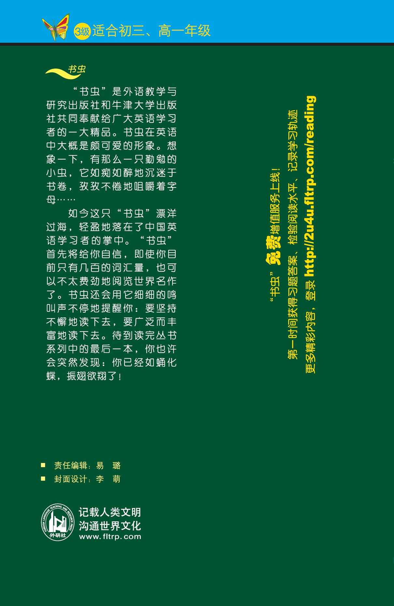